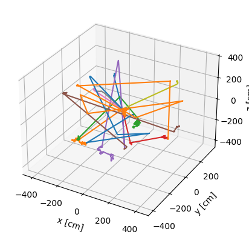

Visualising Particle Tracks#
When running neutronics simulations we may want to track how particles travel through the defined geometry.
This python notebook allows users to generate particle track files that can be opened and viewed alongside the 3D geometry.
First import OpenMC and configure the nuclear data path
import openmc
from pathlib import Path
# Setting the cross section path to the correct location in the docker image.
# If you are running this outside the docker image you will have to change this path to your local cross section path.
openmc.config['cross_sections'] = Path.home() / 'nuclear_data' / 'cross_sections.xml'
This first code block makes a geometry with hemispheres. One side is a moderator (H2O) and the other is a material that is quite transparent to neutrons (zirconium).
Because of the different neutronic properties of the materials, we expect neutrons to track differently through the two materials. We can visualise this using OpenMC.
# MATERIALS
mats = openmc.Materials()
moderating_material = openmc.Material(42, "water") # water contains hydrogen which is a good neutron moderator, note the ID number is 42, we need this later
moderating_material.add_element('H', 2, 'ao') # Note, 'percent_type=' does not have to be written to specify 'ao' or 'wo'
moderating_material.add_element('O', 1, 'ao')
moderating_material.set_density('g/cm3', 1.0)
mats.append(moderating_material)
transparent_material = openmc.Material(82, "zirconium") # one of the more transparent materials, note the ID number is 42, we need this later
transparent_material.add_element('Zr', 1, 'ao')
transparent_material.set_density('g/cm3', 6.49)
mats.append(transparent_material)
# GEOMETRY
sph0 = openmc.Sphere(r=400)
sph1 = openmc.Sphere(r=600, boundary_type='vacuum')
flat_surf = openmc.YPlane(y0=0)
simple_moderator_cell = openmc.Cell(region=+sph0 & -sph1 & +flat_surf)
simple_moderator_cell.fill = moderating_material
simple_transparent_cell = openmc.Cell(region=+sph0 & -sph1 & -flat_surf)
simple_transparent_cell.fill = transparent_material
vaccum_cell = openmc.Cell(region=-sph0)
geom = openmc.Geometry([simple_moderator_cell, simple_transparent_cell, vaccum_cell])
# SIMULATION SETTINGS
# Instantiate a Settings object
sett = openmc.Settings()
batches = 1
sett.batches = batches
sett.inactive = 0
sett.particles = 10 # Note that only 10 particles are simulated, otherwise we make too many files
sett.particle = "neutron"
sett.run_mode = 'fixed source'
# creates a 14MeV point source
source = openmc.IndependentSource()
source.space = openmc.stats.Point((0, 0, 0))
source.angle = openmc.stats.Isotropic()
source.energy = openmc.stats.Discrete([14e6], [1])
# source.file = 'source_1000_particles.h5'
sett.source = source
This is the new part covered by this task. The running of OpenMC in track mode.
# Run OpenMC!
model = openmc.model.Model(geom, mats, sett)
model.run(tracks=True) # this creates h5 files that contain track information
%%%%%%%%%%%%%%%
%%%%%%%%%%%%%%%%%%%%%%%%
%%%%%%%%%%%%%%%%%%%%%%%%%%%%%%
%%%%%%%%%%%%%%%%%%%%%%%%%%%%%%%%%%
%%%%%%%%%%%%%%%%%%%%%%%%%%%%%%%%%%%%%%
%%%%%%%%%%%%%%%%%%%%%%%%%%%%%%%%%%%%%%%%
%%%%%%%%%%%%%%%%%%%%%%%%
%%%%%%%%%%%%%%%%%%%%%%%%
############### %%%%%%%%%%%%%%%%%%%%%%%%
################## %%%%%%%%%%%%%%%%%%%%%%%
################### %%%%%%%%%%%%%%%%%%%%%%%
#################### %%%%%%%%%%%%%%%%%%%%%%
##################### %%%%%%%%%%%%%%%%%%%%%
###################### %%%%%%%%%%%%%%%%%%%%
####################### %%%%%%%%%%%%%%%%%%
####################### %%%%%%%%%%%%%%%%%
###################### %%%%%%%%%%%%%%%%%
#################### %%%%%%%%%%%%%%%%%
################# %%%%%%%%%%%%%%%%%
############### %%%%%%%%%%%%%%%%
############ %%%%%%%%%%%%%%%
######## %%%%%%%%%%%%%%
%%%%%%%%%%%
| The OpenMC Monte Carlo Code
Copyright | 2011-2025 MIT, UChicago Argonne LLC, and contributors
License | https://docs.openmc.org/en/latest/license.html
Version | 0.15.3-dev183
Commit Hash | 08fd19daaaaee3a874eae765939c39e58cd459e1
Date/Time | 2025-06-16 10:57:15
OpenMP Threads | 16
Reading model XML file 'model.xml' ...
Reading cross sections XML file...
Reading H1 from /home/jon/nuclear_data/neutron/H1.h5
Reading H2 from /home/jon/nuclear_data/neutron/H2.h5
Reading O16 from /home/jon/nuclear_data/neutron/O16.h5
Reading O17 from /home/jon/nuclear_data/neutron/O17.h5
Reading O18 from /home/jon/nuclear_data/neutron/O18.h5
Reading Zr90 from /home/jon/nuclear_data/neutron/Zr90.h5
Reading Zr91 from /home/jon/nuclear_data/neutron/Zr91.h5
Reading Zr92 from /home/jon/nuclear_data/neutron/Zr92.h5
Reading Zr94 from /home/jon/nuclear_data/neutron/Zr94.h5
Reading Zr96 from /home/jon/nuclear_data/neutron/Zr96.h5
WARNING: Negative value(s) found on probability table for nuclide Zr96 at 294K
Minimum neutron data temperature: 294.0 K
Maximum neutron data temperature: 294.0 K
Preparing distributed cell instances...
Writing summary.h5 file...
Maximum neutron transport energy: 20000000.0 eV for H1
===============> FIXED SOURCE TRANSPORT SIMULATION <===============
Simulating batch 1
Creating state point statepoint.1.h5...
=======================> TIMING STATISTICS <=======================
Total time for initialization = 9.4975e-01 seconds
Reading cross sections = 9.3474e-01 seconds
Total time in simulation = 1.6671e-02 seconds
Time in transport only = 9.7484e-03 seconds
Time in active batches = 1.6671e-02 seconds
Time accumulating tallies = 3.8150e-06 seconds
Time writing statepoints = 6.8764e-03 seconds
Total time for finalization = 9.9183e-04 seconds
Total time elapsed = 9.7330e-01 seconds
Calculation Rate (active) = 599.848 particles/second
============================> RESULTS <============================
WARNING: Could not compute uncertainties -- only one active batch simulated!
Leakage Fraction = 0.00000
PosixPath('/home/jon/neutronics-workshop/tasks/task_04_make_sources/statepoint.1.h5')
Loading the track output file and plotting the results
tracks = openmc.Tracks('tracks.h5')
Makes a quick 3D plot of the tracks.
tracks.plot()
<Axes3D: xlabel='x [cm]', ylabel='y [cm]', zlabel='z [cm]'>

This exports the tracks.h5 files to vtk / vtp files which can be opened with Paraview to show the tracks in 3d.
tracks.write_to_vtk('tracks.vtp')
<PolyData(0x61ef8c694930) at 0x705ef1bb0640>
Cycles through each of the tracks printing information on each track
# gets the first track from the 10 tracks. This is 10 because we simulated 10 particles
track = tracks[0]
# get the primary particle track from this particle
one_particle = track.particle_tracks[0]
# prints out the x position, y position, z position, x direction, y direction, z direction, energy, weight (varience reduction is off), cell id and material id
print(one_particle.states)
# Notice the energy starts at 14MeV and decreases with each collision
[(( 0. , 0. , 0. ), (-0.66165219, 0.7456147 , 7.92154954e-02), 1.40000000e+07, 0.00000000e+00, 1., 3, 0, -1)
((-264.66087519, 298.24588176, 31.68619815), (-0.66165219, 0.7456147 , 7.92154954e-02), 1.40000000e+07, 7.81511637e-08, 1., 1, 0, 42)
((-265.39525145, 299.0734491 , 31.77412045), (-0.02368145, 0.9423578 , -3.33767825e-01), 6.69506077e+06, 7.83680161e-08, 1., 1, 0, 42)
((-265.43482482, 300.64819511, 31.216371 ), ( 0.11755527, -0.59746849, -7.93228948e-01), 5.68047779e+06, 7.88374307e-08, 1., 1, 0, 42)
((-265.23722523, 299.64390555, 29.88302612), (-0.10197062, 0.737343 , 6.67777874e-01), 4.42245693e+06, 7.93496332e-08, 1., 1, 0, 42)
((-265.54815923, 301.89224932, 31.91924836), (-0.2746274 , 0.96148452, -1.12833934e-02), 2.35113587e+06, 8.04016389e-08, 1., 1, 0, 42)
((-267.34513686, 308.18355959, 31.8454174 ), ( 0.48526355, 0.43978064, -7.55719710e-01), 2.07080652e+05, 8.34926577e-08, 1., 1, 0, 42)
((-266.93289416, 308.5571635 , 31.20341588), ( 0.78710401, -0.54004784, -2.98019469e-01), 2.82004988e+04, 8.48425687e-08, 1., 1, 0, 42)
((-266.28433184, 308.11217189, 30.95785215), ( 0.9503871 , -0.01688664, -3.10611000e-01), 2.03533276e+04, 8.83901208e-08, 1., 1, 0, 42)
((-265.34285018, 308.09544349, 30.65015167), ( 0.95166261, -0.08317997, 2.95667669e-01), 1.34742085e+04, 9.34104071e-08, 1., 1, 0, 42)
((-263.67734888, 307.94987053, 31.1675986 ), ( 0.83493005, -0.44985145, -3.17057535e-01), 7.33017711e+03, 1.04310817e-07, 1., 1, 0, 42)
((-263.45565989, 307.83042686, 31.0834141 ), ( 0.30703382, 0.33646378, -8.90237251e-01), 1.06844725e+03, 1.06552980e-07, 1., 1, 0, 42)
((-263.1745102 , 308.13852545, 30.26822724), ( 0.58106134, -0.14601441, -8.00654425e-01), 7.60793193e+02, 1.26806618e-07, 1., 1, 0, 42)
((-262.71764158, 308.02371933, 29.63870012), (-0.11643885, -0.01341688, -9.93107236e-01), 4.11379605e+02, 1.47415959e-07, 1., 1, 0, 42)
((-262.74248184, 308.02085706, 29.42683749), (-0.23540721, 0.62329945, -7.45708550e-01), 2.41305629e+02, 1.55020356e-07, 1., 1, 0, 42)
((-263.10750489, 308.98734685, 28.27053982), (-0.19036982, -0.05091422, -9.80391287e-01), 1.34760762e+02, 2.27188360e-07, 1., 1, 0, 42)
((-263.11019279, 308.98662797, 28.25669731), ( 0.04430585, 0.40745156, -9.12151422e-01), 1.00156404e+02, 2.28067710e-07, 1., 1, 0, 42)
((-263.09740178, 309.10425847, 27.99336092), (-0.60028273, 0.14039739, -7.87368541e-01), 5.71520489e+01, 2.48923778e-07, 1., 1, 0, 42)
((-263.47465428, 309.19249234, 27.49853284), (-0.60071573, 0.77922728, 1.78732950e-01), 6.39713690e+00, 3.09025678e-07, 1., 1, 0, 42)
((-264.07523319, 309.97154215, 27.67722508), (-0.48319168, 0.145283 , 8.63376306e-01), 2.15669859e-01, 5.94808466e-07, 1., 1, 0, 42)
((-264.1979057 , 310.00842654, 27.8964187 ), (-0.40638249, 0.90736305, -1.07450265e-01), 2.28547949e-01, 9.90048436e-07, 1., 1, 0, 42)
((-265.06112707, 311.93581071, 27.66817716), ( 0.24177391, 0.29432016, 9.24619393e-01), 2.07999214e-01, 4.20242422e-06, 1., 1, 0, 42)
((-264.90762567, 312.12267353, 28.25521474), (-0.6249374 , 0.53183696, 5.71491642e-01), 8.10302434e-02, 5.20889200e-06, 1., 1, 0, 42)
((-265.23354403, 312.400038 , 28.55325998), ( 0.53994487, -0.23277276, 8.08873523e-01), 7.05488694e-02, 6.53346697e-06, 1., 1, 0, 42)
((-264.75149688, 312.19222522, 29.27539884), ( 0.45835907, 0.81070744, 3.64225767e-01), 1.76136915e-02, 8.96355989e-06, 1., 1, 0, 42)
((-264.7423384 , 312.20842397, 29.28267644), (-0.24260751, 0.96811484, -6.24118901e-02), 1.12952107e-02, 9.07240778e-06, 1., 1, 0, 42)
((-264.78948916, 312.39657705, 29.27054669), (-0.70936802, 0.14993454, -6.88706506e-01), 2.05599763e-02, 1.03945102e-05, 1., 1, 0, 42)
((-264.8252797 , 312.40414186, 29.23579862), ( 0.31413946, 0.72205172, 6.16407103e-01), 5.45109123e-02, 1.06489078e-05, 1., 1, 0, 42)
((-264.55103498, 313.03449524, 29.77392391), ( 0.07188311, 0.93464535, -3.48239713e-01), 4.63435114e-02, 1.33522552e-05, 1., 1, 0, 42)
((-264.52277583, 313.401929 , 29.63702169), ( 0.6251982 , -0.20809795, -7.52211712e-01), 5.44758946e-02, 1.46725337e-05, 1., 1, 0, 42)
((-264.14026766, 313.27461071, 29.17680422), ( 0.92319488, -0.3469607 , -1.65316302e-01), 5.87054731e-02, 1.65677057e-05, 1., 1, 0, 42)
((-263.81438881, 313.15213694, 29.11844917), (-0.31788232, 0.31029682, 8.95916688e-01), 5.08494069e-02, 1.76210039e-05, 1., 1, 0, 42)
((-263.82020267, 313.15781206, 29.1348349 ), (-0.63941578, 0.68726456, -3.44695338e-01), 6.40983611e-03, 1.76796424e-05, 1., 1, 0, 42)
((-263.89589479, 313.23916838, 29.0940309 ), (-0.13806876, -0.98427378, -1.10191357e-01), 9.39683576e-02, 1.87486276e-05, 1., 1, 0, 42)
((-263.91931422, 313.07221439, 29.07534008), (-0.75330427, -0.58174062, 3.06774404e-01), 3.98147348e-02, 1.91486809e-05, 1., 1, 0, 42)
((-263.92461185, 313.06812329, 29.07749747), ( 0.89773343, 0.12329004, -4.22935275e-01), 6.45987610e-02, 1.91741620e-05, 1., 1, 0, 42)
((-263.53192672, 313.12205262, 28.8924978 ), ( 0.30148454, 0.20772162, 9.30569073e-01), 1.20700608e-02, 2.04184266e-05, 1., 1, 0, 42)
((-263.47967144, 313.1580563 , 29.05379013), ( 0.53669441, 0.80745296, 2.44905755e-01), 1.24809854e-02, 2.15590393e-05, 1., 1, 0, 42)
((-263.34381405, 313.36245278, 29.11578492), (-0.77543949, -0.57179832, 2.67843758e-01), 2.08531388e-02, 2.31972115e-05, 1., 1, 0, 42)
((-263.87874663, 312.96800091, 29.30055544), (-0.72183201, -0.3885815 , 5.72680507e-01), 1.67436904e-02, 2.66509801e-05, 1., 1, 0, 42)
((-264.60443402, 312.57734395, 29.87629469), (-0.45961316, 0.61422638, -6.41468388e-01), 2.40269062e-02, 3.22681254e-05, 1., 1, 0, 42)
((-264.607944 , 312.58203468, 29.87139592), (-0.66910004, 0.466144 , -5.78804719e-01), 1.38196717e-02, 3.23037451e-05, 1., 1, 0, 42)
((-265.18932375, 312.98706632, 29.3684736 ), ( 0.26410011, -0.0382065 , -9.63738241e-01), 1.81288585e-02, 3.76475156e-05, 1., 1, 0, 42)
((-265.02720159, 312.96361264, 28.77686716), ( 0.37197372, 0.90390436, -2.11169257e-01), 3.32110725e-03, 4.09437370e-05, 1., 1, 0, 42)
((-264.69668456, 313.76677633, 28.58923284), (-0.48584253, 0.82006177, 3.02416501e-01), 6.85725168e-03, 5.20909924e-05, 1., 1, 0, 42)
((-264.74400791, 313.84665421, 28.61868963), (-0.60115823, 0.63913087, -4.79708774e-01), 5.96204096e-03, 5.29414109e-05, 1., 1, 0, 42)
((-265.06913161, 314.19231462, 28.35924929), (-0.84898694, -0.22314939, -4.78983842e-01), 6.08851079e-03, 5.80053698e-05, 1., 1, 0, 42)
((-265.20019132, 314.15786663, 28.28530766), (-0.75895324, 0.50838224, 4.06862970e-01), 1.66125447e-02, 5.94357137e-05, 1., 1, 0, 42)
((-265.3005106 , 314.22506515, 28.33908726), (-0.63487058, 0.25002124, -7.31046319e-01), 4.57583674e-02, 6.01771589e-05, 1., 1, 0, 42)
((-265.392814 , 314.26141557, 28.23280094), ( 0.37397179, 0.73086248, 5.70951082e-01), 3.76341677e-02, 6.06685475e-05, 1., 1, 0, 42)
((-265.06247297, 314.90700935, 28.73713996), ( 0.06864288, 0.7072959 , 7.03577047e-01), 3.61413098e-02, 6.39605513e-05, 1., 1, 0, 42)
((-265.03928962, 315.1458905 , 28.97476511), ( 0.29572767, 0.92958269, 2.20048098e-01), 3.01262961e-02, 6.52449699e-05, 1., 1, 0, 42)
((-264.88108817, 315.64317684, 29.09248127), (-0.92838856, 0.09712574, -3.58693850e-01), 4.49165231e-02, 6.74732688e-05, 1., 1, 0, 42)
((-265.28103845, 315.68501866, 28.93795577), (-0.40726295, 0.3472521 , -8.44720586e-01), 5.58256348e-02, 6.89428750e-05, 1., 1, 0, 42)
((-265.754447 , 316.08866971, 27.95603991), (-0.61065122, 0.44649719, 6.54022429e-01), 6.17912272e-02, 7.24997793e-05, 1., 1, 0, 42)
((-266.03201016, 316.2916189 , 28.25331686), (-0.25593566, 0.03441276, 9.66081105e-01), 1.27153292e-02, 7.38217839e-05, 1., 1, 0, 42)
((-266.09113238, 316.29956839, 28.47648567), (-0.42383857, 0.49269362, -7.60009117e-01), 2.69710188e-02, 7.53028824e-05, 1., 1, 0, 42)
((-266.60609157, 316.89818571, 27.55308298), ( 0.3482949 , 0.68805613, -6.36607744e-01), 1.33934074e-02, 8.06516222e-05, 1., 1, 0, 42)
((-265.96700838, 318.16069375, 26.38497713), ( 0.29773554, 0.53559921, -7.90244918e-01), 1.48351510e-02, 9.21144707e-05, 1., 1, 0, 42)
((-265.92086769, 318.24369664, 26.26251127), ( 0.06317631, -0.65924037, -7.49273576e-01), 2.54270809e-02, 9.30343591e-05, 1., 1, 0, 42)
((-265.91723287, 318.20576748, 26.21940208), ( 0.91901762, -0.38431756, 8.77873426e-02), 5.94800623e-02, 9.32952200e-05, 1., 1, 0, 42)
((-265.71936897, 318.12302416, 26.23830263), (-0.59283922, -0.32779564, 7.35589341e-01), 4.13527987e-02, 9.39334612e-05, 1., 1, 0, 42)
((-265.75256394, 318.10466983, 26.27949064), ( 0.23614954, 0.22876604, 9.44404307e-01), 5.72792731e-02, 9.41325334e-05, 1., 1, 0, 42)
((-265.57617454, 318.27554421, 26.98490345), ( 0.24316655, 0.12334052, 9.62110775e-01), 6.56525767e-02, 9.63889249e-05, 1., 1, 0, 42)
((-265.52521205, 318.30139373, 27.18654121), (-0.28968931, -0.1212198 , 9.49413432e-01), 9.63131412e-02, 9.69802805e-05, 1., 1, 0, 42)
((-265.78358554, 318.19327796, 28.03332172), (-0.09380411, 0.47928632, -8.72631315e-01), 9.59931578e-02, 9.90580651e-05, 1., 1, 0, 42)
((-265.86861096, 318.62771014, 27.24235586), (-0.77971205, 0.14873779, -6.08215580e-01), 1.34013537e-01, 1.01173183e-04, 1., 1, 0, 42)
((-266.33454631, 318.71659191, 26.87890228), (-0.51242444, -0.4460112 , -7.33822329e-01), 8.10122858e-02, 1.02353354e-04, 1., 1, 0, 42)
((-266.48878118, 318.58234679, 26.65802875), (-0.03533771, 0.56945961, -8.21259395e-01), 6.76706095e-02, 1.03117903e-04, 1., 1, 0, 42)
((-266.52242701, 319.12454213, 25.87608917), (-0.70567654, -0.65200297, -2.77331491e-01), 1.31035090e-02, 1.05764090e-04, 1., 1, 0, 42)
((-266.94475402, 318.7343372 , 25.71011429), (-0.78353578, -0.43187356, 4.46717930e-01), 3.38019978e-02, 1.09543963e-04, 1., 1, 0, 42)
((-268.57841386, 317.83388758, 26.64151418), ( 0.74663532, -0.62388752, 2.30868036e-01), 2.82518557e-03, 1.17742935e-04, 1., 1, 0, 42)
((-268.57707816, 317.83277147, 26.64192719), ( 0.04749318, -0.99881116, -1.09848578e-02), 5.57090909e-02, 1.17767269e-04, 1., 1, 0, 42)
((-268.56590574, 317.59780841, 26.63934309), (-0.31163758, -0.68151616, 6.62131206e-01), 8.87855642e-02, 1.18487847e-04, 1., 1, 0, 42)
((-268.59954893, 317.52423456, 26.71082421), ( 0.47113839, -0.8709009 , -1.39857956e-01), 1.96903493e-02, 1.18749788e-04, 1., 1, 0, 42)
((-268.47448699, 317.29305716, 26.67369944), ( 0.93552842, -0.3476725 , 6.25333051e-02), 9.94900506e-03, 1.20117447e-04, 1., 1, 0, 42)
((-268.4731629 , 317.29256508, 26.67378794), (-0.22024533, -0.7456728 , -6.28859339e-01), 7.21913216e-03, 1.20127706e-04, 1., 1, 0, 42)
((-268.60370177, 316.85060663, 26.30106455), (-0.78644275, 0.59468019, -1.66922945e-01), 3.47945273e-03, 1.25171048e-04, 1., 1, 0, 42)
((-268.60913818, 316.85471744, 26.29991067), (-0.16730177, 0.76591824, 6.20789313e-01), 6.67969484e-03, 1.25255774e-04, 1., 1, 0, 42)
((-268.76702536, 317.5775351 , 26.88576625), (-0.2761545 , -0.85517497, 4.38650727e-01), 6.91662528e-02, 1.33604032e-04, 1., 1, 0, 42)
((-268.81050142, 317.44290163, 26.95482471), (-0.8717259 , -0.10654487, -4.78269958e-01), 1.65585108e-01, 1.34036823e-04, 1., 1, 0, 42)
((-268.90407301, 317.43146504, 26.90348693), (-0.03899345, 0.82430689, -5.64798781e-01), 1.97372249e-02, 1.34227537e-04, 1., 1, 0, 42)
((-268.91989072, 317.76584557, 26.674376 ), ( 0.31452336, -0.85746893, -4.07212580e-01), 2.94834071e-02, 1.36315087e-04, 1., 1, 0, 42)
((-268.77229029, 317.36345006, 26.4832781 ), (-0.53133168, -0.66191445, -5.28730469e-01), 4.06402386e-02, 1.38291026e-04, 1., 1, 0, 42)
((-268.77980783, 317.35408497, 26.47579736), (-0.8318441 , -0.30866704, -4.61259198e-01), 1.06886756e-01, 1.38341767e-04, 1., 1, 0, 42)
((-269.02741925, 317.26220539, 26.33849633), (-0.71717278, -0.14548107, -6.81541246e-01), 1.07867730e-01, 1.39000023e-04, 1., 1, 0, 42)
((-270.33735091, 316.99648106, 25.09364644), (-0.6417994 , 0.59622878, -4.82291170e-01), 1.10569817e-02, 1.43020771e-04, 1., 1, 0, 42)
((-270.6666668 , 317.30241405, 24.84617636), ( 0.07843029, -0.36843798, 9.26338029e-01), 5.31506805e-02, 1.46548725e-04, 1., 1, 0, 42)
((-270.60776755, 317.02572601, 25.54183388), (-0.52419933, 0.09389595, -8.46403339e-01), 2.69810520e-03, 1.48903771e-04, 1., 1, 0, 42)
((-270.85738562, 317.07043825, 25.13878573), (-0.23679979, -0.36979071, -8.98432351e-01), 5.48584921e-03, 1.55531701e-04, 1., 1, 0, 42)
((-270.94420804, 316.93485484, 24.80937636), (-0.73552746, 0.39986143, -5.46909677e-01), 7.80826768e-03, 1.59110658e-04, 1., 1, 0, 42)
((-271.09308879, 317.01579222, 24.69867441), (-0.43833723, -0.87265669, 2.15245863e-01), 8.70841234e-02, 1.60766772e-04, 1., 1, 0, 42)
((-271.24192891, 316.71947623, 24.77176248), (-0.3793318 , -0.8244392 , 4.20008806e-01), 1.00088286e-01, 1.61598670e-04, 1., 1, 0, 42)
((-272.56930225, 313.83456491, 26.24147446), (-0.25090003, -0.60448162, 7.56076151e-01), 5.33747343e-02, 1.69595355e-04, 1., 1, 0, 42)
((-272.68497989, 313.55586821, 26.59006393), (-0.26553796, 0.91829767, -2.93630687e-01), 8.98704001e-02, 1.71038164e-04, 1., 1, 0, 42)
((-272.78671006, 313.90767695, 26.47757116), (-0.97880652, 0.20245014, 3.08503799e-02), 1.76944613e-02, 1.71962101e-04, 1., 1, 0, 42)
((-273.35742884, 314.02572081, 26.49555928), (-0.59489363, 0.75973477, -2.62496960e-01), 6.66777915e-02, 1.75131190e-04, 1., 1, 0, 42)
((-273.86728817, 314.67685884, 26.27058373), ( 0.9160221 , 0.35411315, -1.88434045e-01), 4.65310839e-02, 1.77530842e-04, 1., 1, 0, 42)
((-272.65967937, 315.14369273, 26.02216765), (-0.25910939, 0.9477918 , -1.85884464e-01), 1.18671531e-01, 1.81949360e-04, 1., 1, 0, 42)
((-273.04522896, 316.55398797, 25.74557529), (-0.31058113, 0.64025025, -7.02580227e-01), 1.19839511e-01, 1.85072213e-04, 1., 1, 0, 42)
((-273.38919011, 317.26304977, 24.96748454), (-0.46460047, -0.54577614, -6.97334073e-01), 4.88449732e-02, 1.87385141e-04, 1., 1, 0, 42)
((-273.79842247, 316.78231574, 24.35325429), ( 0.03576356, 0.82297555, -5.66949914e-01), 3.07102124e-02, 1.90266572e-04, 1., 1, 0, 42)
((-273.7934898 , 316.8958242 , 24.27505803), ( 0.88214355, 0.43144562, 1.88884710e-01), 4.39890635e-02, 1.90835592e-04, 1., 1, 0, 42)
((-273.7333111 , 316.92525687, 24.2879435 ), ( 0.05307379, 0.14634185, 9.87809312e-01), 2.38144763e-02, 1.91070750e-04, 1., 1, 0, 42)
((-273.69875042, 317.020552 , 24.93118684), ( 0.0911261 , -0.74332624, 6.62693095e-01), 2.48486510e-02, 1.94121520e-04, 1., 1, 0, 42)
((-273.62161986, 316.39138905, 25.49210064), (-0.05938474, -0.55784004, 8.27821201e-01), 2.28040889e-02, 1.98003561e-04, 1., 1, 0, 42)
((-273.63443369, 316.2710203 , 25.67072497), ( 0.31555777, -0.68222867, 6.59535703e-01), 2.53979182e-02, 1.99036621e-04, 1., 1, 0, 42)
((-273.54542963, 316.07859555, 25.8567491 ), ( 0.94689288, 0.29101709, 1.36758608e-01), 2.10070635e-02, 2.00316178e-04, 1., 1, 0, 42)
((-273.32764006, 316.14553078, 25.88820418), ( 0.42773364, 0.01810593, 9.03723470e-01), 1.17653030e-01, 2.01463489e-04, 1., 1, 0, 42)
((-273.17687666, 316.15191258, 26.20673986), (-0.30449397, 0.90824568, 2.87007343e-01), 7.90104693e-02, 2.02206421e-04, 1., 1, 0, 42)
((-273.52552113, 317.19185052, 26.5353622 ), ( 0.33859981, -0.91401557, -2.23440617e-01), 1.42303491e-02, 2.05151450e-04, 1., 1, 0, 42)
((-273.24578242, 316.43672448, 26.35076378), (-0.73087155, -0.37296997, -5.71594425e-01), 1.74511456e-02, 2.10158545e-04, 1., 1, 0, 42)
((-273.76105678, 316.17377559, 25.94778196), (-0.50406272, 0.44312821, -7.41321901e-01), 3.19364918e-02, 2.14016999e-04, 1., 1, 0, 42)
((-273.8119088 , 316.21848028, 25.87299421), (-0.69607065, 0.45745124, -5.53375106e-01), 7.82914529e-02, 2.14425138e-04, 1., 1, 0, 42)
((-274.56843051, 316.7156594 , 25.2715606 ), ( 0.41589561, 0.56816718, -7.10082316e-01), 3.36452629e-02, 2.17233407e-04, 1., 1, 0, 42)
((-274.51376977, 316.79033304, 25.1782352 ), ( 0.92970365, -0.26583572, -2.54916638e-01), 3.11629300e-02, 2.17751440e-04, 1., 1, 0, 42)
((-274.43031163, 316.76646935, 25.15535171), (-0.53889204, -0.41880157, -7.30890283e-01), 8.69536142e-03, 2.18119088e-04, 1., 1, 0, 42)
((-274.49817699, 316.71372759, 25.06330706), ( 0.12117959, -0.99210366, -3.23393935e-02), 1.01877109e-02, 2.19095494e-04, 1., 1, 0, 42)
((-274.47102661, 316.49144601, 25.05606139), (-0.23411377, 0.37573312, -8.96669040e-01), 8.97248528e-02, 2.20700349e-04, 1., 1, 0, 42)
((-274.55682932, 316.62915221, 24.72743216), ( 0.85688077, 0.43253134, 2.80485249e-01), 1.31623394e-02, 2.21584946e-04, 1., 1, 0, 42)
((-274.43107829, 316.69262809, 24.7685946 ), ( 0.56759773, -0.48285518, 6.66846074e-01), 1.17582563e-02, 2.22509756e-04, 1., 1, 0, 42)
((-274.33824287, 316.61365303, 24.87766294), (-0.36709309, 0.88912686, -2.73305873e-01), 1.61618746e-01, 2.23600266e-04, 1., 1, 0, 42)
((-275.11738319, 318.50078904, 24.29758221), ( 0.19223406, 0.65547514, -7.30341291e-01), 6.21153558e-02, 2.27417259e-04, 1., 1, 0, 42)
((-274.76228879, 319.71158149, 22.94849715), ( 0.24903593, 0.8118528 , -5.28087248e-01), 5.45625267e-02, 2.32775741e-04, 1., 1, 0, 42)
((-274.70683781, 319.89235074, 22.83091188), ( 0.10901256, 0.52316547, -8.45230240e-01), 1.37194162e-02, 2.33464914e-04, 1., 1, 0, 42)
((-274.67442474, 320.04790525, 22.57959679), ( 0.52368428, 0.74718582, -4.09228687e-01), 5.77738289e-03, 2.35300199e-04, 1., 1, 0, 42)
((-274.46734613, 320.34336228, 22.41777695), ( 0.56469371, 0.69046735, -4.52079475e-01), 6.06941255e-03, 2.39061412e-04, 1., 1, 0, 42)
((-274.33710275, 320.50261464, 22.31350739), (-0.63017957, -0.0498992 , -7.74844356e-01), 1.29227132e-01, 2.41201823e-04, 1., 1, 0, 42)
((-274.61595539, 320.48053439, 21.970641 ), (-0.25737627, 0.93303953, -2.51385551e-01), 5.37812860e-02, 2.42091764e-04, 1., 1, 0, 42)
((-274.95894322, 321.72393265, 21.63563659), (-0.66035879, 0.52737011, -5.34609237e-01), 6.97355920e-02, 2.46246300e-04, 1., 1, 0, 42)
((-275.19063887, 321.90896745, 21.44806184), (-0.84908943, -0.32386488, -4.17323222e-01), 3.29144008e-02, 2.47206890e-04, 1., 1, 0, 42)
((-275.26501098, 321.88059999, 21.41150832), (-0.7584454 , -0.4710731 , -4.50389510e-01), 3.69481418e-02, 2.47555944e-04, 1., 1, 0, 42)
((-275.56723026, 321.69289054, 21.2320407 ), (-0.59380276, 0.21217841, -7.76130531e-01), 1.59243721e-02, 2.49054694e-04, 1., 1, 0, 42)
((-275.78915025, 321.77218729, 20.94197994), (-0.52181038, 0.76989302, -3.67394434e-01), 8.06017941e-03, 2.51195863e-04, 1., 1, 0, 42)
((-275.79758049, 321.7846255 , 20.9360444 ), (-0.86874058, 0.3618757 , 3.38135736e-01), 3.95343015e-02, 2.51325964e-04, 1., 1, 0, 42)
((-275.79879887, 321.78513302, 20.93651863), ( 0.39509302, -0.89741344, -1.96343123e-01), 1.55279229e-02, 2.51331064e-04, 1., 1, 0, 42)
((-275.65210224, 321.4519266 , 20.86361712), (-0.45637879, -0.84714689, -2.72140671e-01), 2.29059763e-02, 2.53485293e-04, 1., 1, 0, 42)
((-275.72049292, 321.32497733, 20.82283546), ( 0.58378187, -0.64128941, 4.97942382e-01), 1.03074882e-01, 2.54201148e-04, 1., 1, 0, 42)
((-275.5784165 , 321.16890516, 20.94402091), ( 0.162642 , -0.98644376, -2.18239785e-02), 8.68929238e-02, 2.54749201e-04, 1., 1, 0, 42)
((-275.56110197, 321.06389042, 20.94169758), (-0.40032757, 0.53417311, 7.44578349e-01), 4.60938112e-02, 2.55010305e-04, 1., 1, 0, 42)
((-275.79833457, 321.38043938, 21.38293188), (-0.57150439, 0.7490712 , 3.35074731e-01), 5.13931758e-02, 2.57005868e-04, 1., 1, 0, 42)
((-275.82546019, 321.41599295, 21.39883572), ( 0.12122408, 0.9781895 , -1.68671363e-01), 4.84692488e-02, 2.57157236e-04, 1., 1, 0, 42)
((-275.81613779, 321.49121789, 21.38586452), (-0.3502048 , 0.77472791, -5.26453469e-01), 6.20074875e-02, 2.57409778e-04, 1., 1, 0, 42)
((-276.01658823, 321.93465711, 21.08453276), (-0.53915616, 0.37971581, -7.51748983e-01), 5.25586315e-02, 2.59071624e-04, 1., 1, 0, 42)
((-276.55631058, 322.31477167, 20.33199435), ( 0.48138914, 0.72494722, -4.92662180e-01), 5.62415775e-02, 2.62228529e-04, 1., 1, 0, 42)
((-275.86834236, 323.35081632, 19.62791548), ( 0.28842382, 0.8754696 , 3.87768843e-01), 1.19656492e-01, 2.66585365e-04, 1., 1, 0, 42)
((-275.74823841, 323.71537483, 19.78938817), ( 0.69980994, 0.5321348 , 4.76548643e-01), 4.39340665e-02, 2.67455699e-04, 1., 1, 0, 42)
((-275.68640445, 323.76239331, 19.83149516), ( 0.43670475, 0.58475092, 6.83633909e-01), 3.88058607e-02, 2.67760470e-04, 1., 1, 0, 42)
((-275.32557472, 324.24554702, 20.39635149), (-0.1077393 , -0.69490923, 7.10980591e-01), 1.96682290e-02, 2.70792919e-04, 1., 1, 0, 42)
((-275.37662637, 323.91626828, 20.73324556), (-0.34988988, -0.74976921, 5.61625505e-01), 3.34766905e-02, 2.73235679e-04, 1., 1, 0, 42)
((-275.42676914, 323.80881873, 20.8137322 ), (-0.32161529, 0.92147537, 2.17822747e-01), 4.18188370e-03, 2.73801962e-04, 1., 1, 0, 42)
((-275.58169075, 324.25269203, 20.91865709), (-0.91068856, -0.40428027, -8.48752848e-02), 5.68507066e-02, 2.79187352e-04, 1., 1, 0, 42)
((-275.87026411, 324.1245862 , 20.89176234), ( 0.22085707, 0.54805683, -8.06756383e-01), 2.04771025e-02, 2.80148181e-04, 1., 1, 0, 42)
((-275.73854247, 324.45145345, 20.41060377), (-0.86662767, 0.09411865, -4.89998130e-01), 2.96433710e-02, 2.83161460e-04, 1., 1, 0, 42)
((-275.98175237, 324.47786685, 20.27309097), ( 0.41941134, 0.07154559, -9.04972573e-01), 1.75167170e-02, 2.84339915e-04, 1., 1, 0, 42)
((-275.73630355, 324.51973692, 19.74348093), (-0.71868743, 0.01466118, 6.95178701e-01), 1.46394651e-02, 2.87536764e-04, 1., 1, 0, 42)
((-276.17488421, 324.52868394, 20.16771534), (-0.72438125, 0.11777417, -6.79265081e-01), 1.92182763e-02, 2.91183251e-04, 1., 1, 0, 42)
((-276.19811299, 324.53246061, 20.1459333 ), (-0.88293247, 0.4562085 , 1.10923618e-01), 1.41306966e-02, 2.91350487e-04, 1., 1, 0, 42)
((-276.37956845, 324.62621809, 20.16872972), (-0.77107053, 0.62921915, 9.76396636e-02), 1.45927389e-02, 2.92600425e-04, 1., 1, 0, 42)
((-276.57210376, 324.7833333 , 20.19311022), (-0.32016651, 0.50620063, 8.00783573e-01), 5.90514201e-02, 2.94094856e-04, 1., 1, 0, 42)
((-276.65087994, 324.90788271, 20.39014103), (-0.4863997 , -0.04516465, 8.72568329e-01), 8.07946647e-02, 2.94826891e-04, 1., 1, 0, 42)
((-277.68193756, 324.81214384, 22.23978904), ( 0.93325805, 0.35876645, 1.77779048e-02), 6.86191728e-02, 3.00218595e-04, 1., 1, 0, 42)
((-277.41043605, 324.91651544, 22.24496095), ( 0.73074933, -0.10894585, -6.73896294e-01), 7.61306987e-02, 3.01021522e-04, 1., 1, 0, 42)
((-276.91531706, 324.84269921, 21.78836272), (-0.0168768 , 0.39966172, -9.16507330e-01), 1.23370917e-01, 3.02796892e-04, 1., 1, 0, 42)
((-276.92661708, 325.11029643, 21.17470671), ( 0.65093053, -0.16399309, -7.41212328e-01), 6.65938742e-02, 3.04175087e-04, 1., 1, 0, 42)
((-276.58412511, 325.02401024, 20.78471229), ( 0.49206064, 0.84008001, -2.28346009e-01), 5.24510613e-02, 3.05649185e-04, 1., 1, 0, 42)
((-276.16225321, 325.74425917, 20.58893812), ( 0.63520114, 0.57791403, -5.12381584e-01), 8.29292772e-03, 3.08355714e-04, 1., 1, 0, 42)
((-275.97058599, 325.91864043, 20.43433078), ( 0.02136375, 0.08204317, -9.96399774e-01), 7.70670963e-03, 3.10751292e-04, 1., 1, 0, 42)
((-275.97041573, 325.91929427, 20.42639 ), ( 0.2755153 , -0.95045603, -1.43960566e-01), 2.26271316e-02, 3.10816925e-04, 1., 1, 0, 42)
((-275.42698061, 324.04458464, 20.14243762), (-0.57865723, 0.13741843, -8.03910433e-01), 4.86849550e-02, 3.20297072e-04, 1., 1, 0, 42)
((-275.49344596, 324.0603687 , 20.05009938), (-0.58480247, -0.51369897, -6.27789325e-01), 3.18078942e-02, 3.20673432e-04, 1., 1, 0, 42)
((-275.5607278 , 324.00126735, 19.97787187), ( 0.35290054, -0.89934475, -2.58147689e-01), 1.39350599e-02, 3.21139822e-04, 1., 1, 0, 42)
((-275.50380843, 323.85621193, 19.9362352 ), ( 0.40894234, -0.86980154, -2.76064208e-01), 1.36810183e-02, 3.22127650e-04, 1., 1, 0, 42)
((-275.4967179 , 323.84113069, 19.9314486 ), ( 0.46229244, -0.8815525 , 9.56603307e-02), 1.36056893e-02, 3.22234823e-04, 1., 1, 0, 42)
((-275.42006228, 323.69495492, 19.94731064), (-0.31220023, -0.5758198 , -7.55620656e-01), 2.14181870e-02, 3.23262590e-04, 1., 1, 0, 42)
((-275.50497817, 323.53833669, 19.74178806), ( 0.59534398, 0.70760993, -3.80596561e-01), 3.12583228e-02, 3.24606259e-04, 1., 1, 0, 42)
((-275.4994923 , 323.54485705, 19.73828101), ( 0.7673113 , -0.61771127, -1.72238660e-01), 8.18163793e-02, 3.24643940e-04, 1., 1, 0, 42)
((-275.12992244, 323.24734095, 19.65532353), ( 0.89202777, -0.37592182, 2.50936731e-01), 8.40243993e-02, 3.25861338e-04, 1., 1, 0, 42)
((-274.19146798, 322.85185381, 19.91932057), ( 0.46557813, -0.53365173, 7.06011921e-01), 3.33131025e-02, 3.28485314e-04, 1., 1, 0, 42)
((-274.15800157, 322.81349418, 19.9700697 ), ( 0.57905754, 0.10032527, 8.09090357e-01), 1.31708491e-02, 3.28770047e-04, 1., 1, 0, 42)
((-273.88711281, 322.86042732, 20.34857005), (-0.3228479 , 0.3960483 , 8.59601636e-01), 4.87400672e-02, 3.31717115e-04, 1., 1, 0, 42)
((-274.22506614, 323.27500596, 21.24839078), ( 0.25665618, 0.75868051, -5.98774990e-01), 3.34257973e-02, 3.35145136e-04, 1., 1, 0, 42)
((-274.03341543, 323.84152907, 20.80127257), (-0.59039079, 0.73037994, -3.43487777e-01), 7.15865224e-02, 3.38098015e-04, 1., 1, 0, 42)
((-274.50507132, 324.42502055, 20.52686445), (-0.9488216 , -0.05193163, -3.11513542e-01), 3.06870861e-02, 3.40256743e-04, 1., 1, 0, 42)
((-274.77434349, 324.41028254, 20.43845802), (-0.95693905, 0.170524 , 2.34923873e-01), 3.85012688e-02, 3.41428012e-04, 1., 1, 0, 42)
((-275.02409728, 324.454788 , 20.49977136), ( 0.50252204, -0.09577994, 8.59242572e-01), 6.43694689e-02, 3.42389665e-04, 1., 1, 0, 42)
((-274.95804857, 324.44219922, 20.61270543), ( 0.02068893, -0.61196909, 7.90611028e-01), 3.27304222e-02, 3.42764204e-04, 1., 1, 0, 42)
((-274.92872613, 323.57485463, 21.73323945), (-0.33984837, -0.46571761, 8.17074166e-01), 2.38876596e-02, 3.48428086e-04, 1., 1, 0, 42)
((-275.10878874, 323.32810245, 22.16615166), (-0.03973457, 0.85783931, 5.12379620e-01), 2.52282905e-02, 3.50906531e-04, 1., 1, 0, 42)
((-275.11416758, 323.44422734, 22.235512 ), ( 0.05973698, 0.99640129, -6.01329477e-02), 1.70361232e-02, 3.51522705e-04, 1., 1, 0, 42)
((-275.09563764, 323.753303 , 22.21685924), ( 0.29215355, 0.1684204 , 9.41424915e-01), 5.34487655e-02, 3.53240902e-04, 1., 1, 0, 42)
((-274.96918396, 323.8262009 , 22.62433896), ( 0.28510919, 0.5626547 , 7.75971930e-01), 8.03967034e-02, 3.54594467e-04, 1., 1, 0, 42)
((-274.90782476, 323.9472915 , 22.7913382 ), (-0.75672265, -0.1540113 , -6.35335626e-01), 5.61612320e-03, 3.55143221e-04, 1., 1, 0, 42)
((-275.19141994, 323.88957304, 22.55323495), (-0.35859602, -0.09354904, -9.28793556e-01), 2.42380870e-03, 3.58758748e-04, 1., 1, 0, 42)
((-275.29674522, 323.86209622, 22.28043371), (-0.1130572 , -0.73814204, -6.65104800e-01), 3.42679682e-03, 3.63072009e-04, 1., 1, 0, 42)
((-275.32069608, 323.70572284, 22.13953307), (-0.16000496, 0.82859429, 5.36497819e-01), 1.93976358e-02, 3.65688424e-04, 1., 1, 0, 42)
((-275.46742151, 324.46554837, 22.63150452), ( 0.72978848, -0.3088836 , 6.09917782e-01), 2.44945470e-02, 3.70448625e-04, 1., 1, 0, 42)
((-275.34740056, 324.4147494 , 22.73181155), ( 0.83065679, 0.4764833 , 2.88050287e-01), 2.33645240e-03, 3.71208345e-04, 1., 1, 0, 42)
((-275.26855324, 324.45997798, 22.75915376), (-0.28611535, 0.68334645, 6.71696089e-01), 3.24263573e-02, 3.72628104e-04, 1., 1, 0, 42)
((-275.59033196, 325.22850139, 23.51457463), (-0.70573159, -0.0878045 , 7.03017282e-01), 9.95627922e-03, 3.77143490e-04, 1., 1, 0, 42)
((-275.68334936, 325.21692851, 23.60723428), (-0.80211955, -0.20039483, -5.62535457e-01), 8.18530778e-03, 3.78098491e-04, 1., 1, 0, 42)
((-276.20147162, 325.08748518, 23.24386931), ( 0.64279388, 0.74181142, -1.91133058e-01), 4.96090056e-03, 3.83260318e-04, 1., 1, 0, 42)
((-276.08762312, 325.21887119, 23.21001676), ( 0.81425831, -0.02348597, -5.80027431e-01), 1.50367186e-01, 3.85078357e-04, 1., 1, 0, 42)
((-275.84103729, 325.21175882, 23.03436422), ( 0.44979875, -0.63742905, -6.25591947e-01), 3.63146562e-02, 3.85642978e-04, 1., 1, 0, 42)
((-275.80224978, 325.15679138, 22.98041753), (-0.34809422, -0.84960358, -3.96237517e-01), 2.30700977e-02, 3.85970138e-04, 1., 1, 0, 42)
((-275.94825001, 324.80044443, 22.81422469), (-0.1987355 , -0.85623005, -4.76837820e-01), 1.87732759e-02, 3.87966594e-04, 1., 1, 0, 42)
((-275.95385103, 324.77631303, 22.80078583), (-0.66401678, 0.7474797 , 1.88630489e-02), 3.36359434e-02, 3.88115308e-04, 1., 1, 0, 42)
((-275.98642817, 324.81298492, 22.80171126), (-0.2224603 , 0.97387694, -4.55535761e-02), 1.23821772e-01, 3.88308709e-04, 1., 1, 0, 42)
((-276.10555905, 325.33451087, 22.77731663), (-0.87761338, 0.24233716, 4.13603011e-01), 5.20751842e-02, 3.89408984e-04, 1., 1, 0, 42)
((-276.37185973, 325.40804501, 22.90281923), (-0.99817581, -0.05549027, 2.37884539e-02), 5.31583040e-02, 3.90370334e-04, 1., 1, 0, 42)
((-276.45135109, 325.40362595, 22.90471366), (-0.80146928, 0.42609067, -4.19635238e-01), 4.78237927e-02, 3.90620055e-04, 1., 1, 0, 42)
((-276.619078 , 325.49279577, 22.8168948 ), ( 0.90655638, 0.41954363, 4.62457188e-02), 3.05800848e-02, 3.91311920e-04, 1., 1, 0, 42)
((-276.56295098, 325.5187707 , 22.81975798), (-0.11112013, -0.99120206, -7.19082918e-02), 1.02501410e-01, 3.91567888e-04, 1., 1, 0, 42)
((-276.59361729, 325.2452243 , 22.79991313), (-0.43724314, -0.80624054, 3.98490434e-01), 7.63168693e-02, 3.92191094e-04, 1., 1, 0, 42)
((-276.75498557, 324.94767441, 22.94697939), (-0.63105149, -0.1753003 , 7.55674418e-01), 4.59609788e-02, 3.93156951e-04, 1., 1, 0, 42)
((-277.1133103 , 324.84813509, 23.37606773), ( 0.11567059, -0.82618199, -5.51401519e-01), 2.98791577e-02, 3.95071847e-04, 1., 1, 0, 42)
((-277.03388105, 324.2808084 , 22.99742864), ( 0.78976183, 0.01117142, 6.13311877e-01), 5.66034518e-02, 3.97943957e-04, 1., 1, 0, 42)
((-276.8036766 , 324.28406472, 23.17620041), ( 0.8226969 , -0.28986372, 4.89028460e-01), 6.68784928e-02, 3.98829733e-04, 1., 1, 0, 42)
((-276.67157731, 324.2375217 , 23.25472303), ( 0.84504421, 0.50070531, -1.87601916e-01), 1.91153519e-02, 3.99278629e-04, 1., 1, 0, 42)
((-276.58388998, 324.28947817, 23.23525622), (-0.26955697, 0.94279302, 1.96164103e-01), 4.31614478e-02, 3.99821247e-04, 1., 1, 0, 42)
((-276.79007949, 325.01063934, 23.38530606), ( 0.03041571, -0.56908321, 8.21717217e-01), 5.81295093e-02, 4.02483171e-04, 1., 1, 0, 42)
((-276.77419196, 324.71338095, 23.81452682), (-0.22985607, -0.3402405 , 9.11812802e-01), 4.36896964e-02, 4.04049518e-04, 1., 1, 0, 42)
((-276.93558669, 324.47447918, 24.45476129), (-0.25643255, -0.63612954, 7.27723543e-01), 7.07850072e-02, 4.06478206e-04, 1., 1, 0, 42)
((-277.00434617, 324.30390825, 24.64989211), ( 0.30901331, -0.45011774, -8.37797584e-01), 4.06528905e-02, 4.07206852e-04, 1., 1, 0, 42)
((-276.89666894, 324.14706249, 24.35795737), (-0.33473764, -0.88111868, 3.34036798e-01), 5.88075780e-02, 4.08456330e-04, 1., 1, 0, 42)
((-276.94433077, 324.02160385, 24.40551941), ( 0.19815557, 0.06844205, 9.77778121e-01), 5.97111267e-02, 4.08880830e-04, 1., 1, 0, 42)
((-276.88790261, 324.04109388, 24.68395831), ( 0.0639851 , 0.67073542, 7.38931599e-01), 1.96426189e-02, 4.09723368e-04, 1., 1, 0, 42)
((-276.8600838 , 324.33270964, 25.00522374), ( 0.19560883, 0.12162719, -9.73110482e-01), 1.13299881e-02, 4.11966154e-04, 1., 1, 0, 42)
((-276.78900298, 324.37690683, 24.65161246), ( 0.78942767, -0.20914207, 5.77116580e-01), 6.72379374e-02, 4.14434336e-04, 1., 1, 0, 42)
((-276.25916388, 324.23653723, 25.03895501), ( 0.30861209, -0.94574553, -1.01606983e-01), 4.45587889e-02, 4.16305674e-04, 1., 1, 0, 42)
((-275.9438303 , 323.27019361, 24.93513506), ( 0.73794174, -0.32513438, 5.91379432e-01), 4.89685344e-02, 4.19805274e-04, 1., 1, 0, 42)
((-275.51514847, 323.08131799, 25.27867657), ( 0.42521813, 0.88329838, -1.97417102e-01), 4.10201207e-03, 4.21703213e-04, 1., 1, 0, 42)
((-275.50213904, 323.10834226, 25.27263665), ( 0.39887687, -0.15901176, 9.03112676e-01), 5.40092247e-02, 4.22048576e-04, 1., 1, 0, 42)
((-275.45139815, 323.08811447, 25.38752107), ( 0.61187938, -0.16564702, 7.73411076e-01), 4.09845216e-02, 4.22444319e-04, 1., 1, 0, 42)
((-275.31121809, 323.05016515, 25.56470765), ( 0.54821414, -0.59625699, -5.86462998e-01), 5.85381014e-02, 4.23262479e-04, 1., 1, 0, 42)
((-275.22323716, 322.954474 , 25.4705883 ), ( 0.70486625, -0.22507674, -6.72684201e-01), 4.70586334e-02, 4.23742043e-04, 1., 1, 0, 42)
((-274.65055331, 322.77160553, 24.92405145), ( 0.23066416, 0.52519531, 8.19123880e-01), 1.26179955e-02, 4.26449842e-04, 1., 1, 0, 42)
((-274.53222128, 323.04103371, 25.34426667), ( 0.05154454, 0.4556568 , 8.88661936e-01), 4.35382061e-02, 4.29751673e-04, 1., 1, 0, 42)
((-274.51608992, 323.18363587, 25.62238192), ( 0.99245415, 0.03055265, -1.18748881e-01), 9.62795832e-02, 4.30836051e-04, 1., 1, 0, 42)
((-274.43890877, 323.18601189, 25.61314706), ( 0.90128175, -0.19551093, -3.86609216e-01), 8.90162509e-02, 4.31017252e-04, 1., 1, 0, 42)
((-274.37921674, 323.17306316, 25.58754187), ( 0.84954619, -0.34049522, 4.02907280e-01), 4.65954498e-02, 4.31177743e-04, 1., 1, 0, 42)
((-272.71993223, 322.50802758, 26.37447708), (-0.43840397, -0.48189456, 7.58669622e-01), 9.01101026e-02, 4.37719432e-04, 1., 1, 0, 42)
((-273.01875078, 322.17956561, 26.89159045), (-0.4966827 , -0.84134584, -2.13174741e-01), 9.22247400e-02, 4.39361058e-04, 1., 1, 0, 42)
((-273.20660918, 321.86134657, 26.81096217), (-0.21107817, 0.90488644, -3.69630277e-01), 5.39463657e-02, 4.40261500e-04, 1., 1, 0, 42)
((-273.23220443, 321.97107269, 26.76614097), ( 0.12628706, 0.27591865, -9.52848613e-01), 4.55733110e-02, 4.40638952e-04, 1., 1, 0, 42)
((-273.18458324, 322.07511799, 26.40683428), ( 0.55098106, 0.02282975, -8.34205415e-01), 3.02758140e-02, 4.41916020e-04, 1., 1, 0, 42)
((-272.07076379, 322.12126879, 24.72047102), ( 0.07064574, 0.65960102, -7.48288499e-01), 2.84525810e-02, 4.50315609e-04, 1., 1, 0, 42)
((-272.06745083, 322.15220104, 24.68537973), (-0.85178379, 0.19799802, -4.85037283e-01), 2.02464585e-02, 4.50516609e-04, 1., 1, 0, 42)
((-272.3463626 , 322.21703437, 24.52655703), (-0.18722126, 0.12653868, -9.74133545e-01), 1.12806562e-02, 4.52180370e-04, 1., 1, 0, 42)
((-272.34774997, 322.21797207, 24.51933837), (-0.97215021, 0.18257107, 1.46941394e-01), 3.45976832e-02, 4.52230812e-04, 1., 1, 0, 42)
((-272.72641527, 322.2890859 , 24.57657398), (-0.29011545, -0.56539716, -7.72113384e-01), 5.57434255e-02, 4.53744814e-04, 1., 1, 0, 42)
((-272.74740108, 322.24818729, 24.52072233), (-0.69233194, 0.31797682, 6.47740095e-01), 2.39412743e-02, 4.53966321e-04, 1., 1, 0, 42)
((-273.12854453, 322.42324028, 24.87731702), ( 0.49411547, -0.83638261, -2.37305796e-01), 5.20677876e-03, 4.56538660e-04, 1., 1, 0, 42)
((-273.00759161, 322.2185049 , 24.8192277 ), ( 0.84744824, 0.53073738, -1.22192910e-02), 2.22726824e-02, 4.58991285e-04, 1., 1, 0, 42)
((-272.58910868, 322.48059115, 24.81319363), ( 0.95923371, 0.04840541, 2.78437795e-01), 2.32499749e-02, 4.61383533e-04, 1., 1, 0, 42)
((-272.02355419, 322.5091305 , 24.97735774), ( 0.6929505 , -0.71552806, -8.85392265e-02), 2.16402426e-02, 4.64179078e-04, 1., 1, 0, 42)
((-271.28080044, 321.7421765 , 24.88245508), ( 0.26350996, -0.8965744 , 3.55973094e-01), 5.39329970e-02, 4.69447001e-04, 1., 1, 0, 42)
((-271.16675163, 321.35413331, 25.03652254), (-0.04033458, -0.88241205, 4.68745228e-01), 7.19574002e-02, 4.70794394e-04, 1., 1, 0, 42)
((-271.17411993, 321.1929346 , 25.12215275), (-0.90341948, 0.42299812, -7.00416890e-02), 5.33175938e-02, 4.71286751e-04, 1., 1, 0, 42)
((-271.50166588, 321.34629782, 25.09675826), (-0.96747082, -0.11999196, 2.22715380e-01), 1.78324648e-02, 4.72421959e-04, 1., 1, 0, 42)
((-271.79698336, 321.30967065, 25.16474144), (-0.3127648 , 0.27330658, 9.09660209e-01), 1.04601916e-02, 4.74074580e-04, 1., 1, 0, 42)
((-271.98742253, 321.47608412, 25.7186239 ), ( 0.47270835, 0.72491401, 5.01045400e-01), 2.44903165e-02, 4.78378819e-04, 1., 1, 0, 42)
((-271.75146869, 321.83792721, 25.96872227), ( 0.48305417, 0.59993193, -6.37761986e-01), 1.48257929e-02, 4.80684846e-04, 1., 1, 0, 42)
((-271.7464165 , 321.8442018 , 25.96205201), (-0.65166999, 0.70149922, 2.88487568e-01), 2.57543094e-03, 4.80746948e-04, 1., 1, 0, 42)
((-272.0186516 , 322.13725306, 26.08256768), ( 0.10861344, 0.05420097, 9.92605348e-01), 5.68035302e-02, 4.86698350e-04, 1., 1, 0, 42)
((-271.95849048, 322.16727504, 26.63237301), ( 0.20796943, 0.86693628, 4.52957173e-01), 4.71683390e-02, 4.88378594e-04, 1., 1, 0, 42)
((-271.87944602, 322.49677786, 26.80453176), ( 0.74372564, -0.54896217, 3.81461293e-01), 8.72861078e-03, 4.89643839e-04, 1., 1, 0, 42)
((-271.58186618, 322.27712687, 26.95716222), (-0.78354552, 0.1010338 , -6.13064915e-01), 7.36520420e-03, 4.92740160e-04, 1., 1, 0, 42)
((-272.25230018, 322.36357557, 26.43259849), (-0.01679342, -0.11437782, 9.93295372e-01), 8.04340219e-03, 4.99948366e-04, 1., 1, 0, 42)
((-272.25609611, 322.33772197, 26.65711988), ( 0.54381171, 0.80680431, 2.30945098e-01), 5.82297273e-03, 5.01770529e-04, 1., 1, 0, 42)
((-272.20260373, 322.41708378, 26.67983694), ( 0.51612555, 0.15734919, -8.41935657e-01), 8.53010433e-03, 5.02702492e-04, 1., 1, 0, 42)
((-271.85483401, 322.52310698, 26.11253364), (-0.57717344, 0.41191882, -7.05119640e-01), 3.50833731e-02, 5.07977062e-04, 1., 1, 0, 42)
((-271.98973153, 322.61938103, 25.94773243), ( 0.15432253, 0.95748841, 2.43722197e-01), 4.26746125e-02, 5.08879204e-04, 1., 1, 0, 42)
((-271.86619899, 323.38583405, 26.14282786), ( 0.63870909, 0.23536168, 7.32567793e-01), 2.24085103e-03, 5.11680732e-04, 1., 1, 0, 42)
((-271.71388648, 323.44196059, 26.31752279), ( 0.66034669, -0.68756378, 3.01990555e-01), 1.48110012e-03, 5.15322848e-04, 1., 1, 0, 42)
((-271.65352859, 323.37911497, 26.34512574), (-0.55595944, -0.82671392, -8.63318575e-02), 4.04729122e-02, 5.17039957e-04, 1., 1, 0, 42)
((-272.14379425, 322.65008796, 26.2689951 ), ( 0.26945472, 0.27820445, 9.21952512e-01), 3.84932937e-02, 5.20209042e-04, 1., 1, 0, 42)
((-272.11402346, 322.68082547, 26.37085733), ( 0.49515815, 0.86421356, -8.91814780e-02), 7.01833908e-02, 5.20616178e-04, 1., 1, 0, 42)
((-272.02455035, 322.83698542, 26.35474259), (-0.82797876, 0.53175951, -1.77997166e-01), 5.32169606e-02, 5.21109306e-04, 1., 1, 0, 42)
((-272.05012729, 322.85341191, 26.34924411), (-0.85049054, 0.50233314, 1.55971992e-01), 5.33327319e-02, 5.21206119e-04, 1., 1, 0, 42)
((-272.28401384, 322.99155449, 26.39213671), (-0.63083284, -0.18749402, -7.52924908e-01), 2.46187703e-02, 5.22067046e-04, 1., 1, 0, 42)
((-272.67592381, 322.87507233, 25.92437606), (-0.84184429, -0.50469026, 1.91274523e-01), 1.83920802e-02, 5.24929686e-04, 1., 1, 0, 42)
((-273.20132666, 322.56009044, 26.04375227), (-0.62412488, 0.12135902, -7.71842029e-01), 1.56068511e-02, 5.28256841e-04, 1., 1, 0, 42)
((-273.23959539, 322.56753167, 25.99642615), (-0.21122687, -0.89838226, 3.85087686e-01), 4.30791538e-02, 5.28611689e-04, 1., 1, 0, 42)
((-273.29959753, 322.31233279, 26.10581605), ( 0.17353442, -0.97948255, -1.02468240e-01), 5.12272675e-02, 5.29601180e-04, 1., 1, 0, 42)
((-273.28975181, 322.25676046, 26.10000237), ( 0.11625019, -0.95308472, -2.79491347e-01), 4.91766361e-02, 5.29782414e-04, 1., 1, 0, 42)
((-273.1839128 , 321.3890325 , 25.84554182), ( 0.26964337, 0.74275934, 6.12862962e-01), 1.05036979e-01, 5.32750664e-04, 1., 1, 0, 42)
((-272.95190127, 322.02813123, 26.37287271), ( 0.95061767, -0.01887278, 3.09790021e-01), 8.83184386e-02, 5.34670113e-04, 1., 1, 0, 42)
((-272.8995171 , 322.02709124, 26.38994381), ( 0.91047931, 0.32740868, 2.52647947e-01), 1.07409612e-01, 5.34804172e-04, 1., 1, 0, 42)
((-272.89210773, 322.02975565, 26.39199983), ( 0.87807358, -0.18415538, 4.41671349e-01), 1.15194213e-02, 5.34822124e-04, 1., 1, 0, 42)
((-272.65590836, 321.98021836, 26.5108082 ), ( 0.04169735, -0.98535816, -1.65319750e-01), 3.73037080e-02, 5.36634133e-04, 1., 1, 0, 42)
((-272.65541726, 321.9686131 , 26.50886111), (-0.39993368, -0.61361984, 6.80825784e-01), 3.31515384e-02, 5.36678220e-04, 1., 1, 0, 42)
((-272.953484 , 321.51128811, 27.01627405), ( 0.32332353, 0.91880674, -2.26398024e-01), 5.63477301e-03, 5.39637605e-04, 1., 1, 0, 42)
((-272.95339101, 321.51155235, 27.01620894), (-0.49891659, 0.64062547, -5.83679057e-01), 1.16391185e-01, 5.39640375e-04, 1., 1, 0, 42)
((-273.05511769, 321.64217278, 26.89719961), (-0.06956946, -0.11730267, -9.90656436e-01), 1.10411686e-01, 5.40072466e-04, 1., 1, 0, 42)
((-273.08633793, 321.58953162, 26.45262906), ( 0.56940445, -0.77865975, -2.63567007e-01), 3.00138036e-02, 5.41048888e-04, 1., 1, 0, 42)
((-273.07166054, 321.56946031, 26.44583516), ( 0.70472697, 0.63916815, -3.07935026e-01), 7.31201319e-02, 5.41156459e-04, 1., 1, 0, 42)
((-272.86997753, 321.7523813 , 26.35770846), ( 0.5838294 , 0.62253487, -5.21146395e-01), 6.24783674e-02, 5.41921629e-04, 1., 1, 0, 42)
((-272.04283305, 322.63436202, 25.61937058), ( 0.39181759, -0.02798912, -9.19617086e-01), 6.08108801e-02, 5.46019501e-04, 1., 1, 0, 42)
((-271.35596952, 322.58529657, 24.00726472), ( 0.83515636, 0.41958853, -3.55611185e-01), 6.22272241e-02, 5.51159035e-04, 1., 1, 0, 42)
((-271.28470332, 322.62110122, 23.97691943), ( 0.7357774 , 0.53630641, -4.13529999e-01), 5.50357395e-02, 5.51406351e-04, 1., 1, 0, 42)
((-270.91270826, 322.89224754, 23.76784653), ( 0.28084714, 0.78575855, -5.51097432e-01), 6.75752641e-02, 5.52964454e-04, 1., 1, 0, 42)
((-270.73224921, 323.39713874, 23.41373744), ( 0.06904492, 0.99760285, 4.62066569e-03), 5.55135565e-02, 5.54751528e-04, 1., 1, 0, 42)
((-270.71577138, 323.6352204 , 23.41484018), ( 0.13148572, 0.32448075, 9.36708999e-01), 5.36921333e-02, 5.55483841e-04, 1., 1, 0, 42)
((-270.69245408, 323.69276287, 23.58095342), ( 0.27983932, 0.86347426, 4.19645269e-01), 1.18398147e-02, 5.56037156e-04, 1., 1, 0, 42)
((-270.59999051, 323.97806914, 23.71961121), (-0.0916267 , -0.80491437, -5.86274166e-01), 5.42745024e-02, 5.58232574e-04, 1., 1, 0, 42)
((-270.63567121, 323.66462444, 23.491308 ), ( 0.56540403, -0.82267268, 5.93965473e-02), 7.64376915e-02, 5.59441059e-04, 1., 1, 0, 42)
((-270.18990943, 323.01603331, 23.53813595), ( 0.65874404, -0.41105121, -6.30153306e-01), 6.65565877e-02, 5.61502723e-04, 1., 1, 0, 42)
((-269.82824265, 322.79035602, 23.19216619), ( 0.68746042, -0.38750413, -6.14197626e-01), 4.62559947e-02, 5.63041318e-04, 1., 1, 0, 42)
((-269.12930167, 322.39638059, 22.56771149), ( 0.55192843, -0.77910113, -2.97281761e-01), 3.06419007e-02, 5.66459039e-04, 1., 1, 0, 42)
((-269.10084821, 322.35621573, 22.55238578), (-0.93882634, -0.19842308, 2.81484244e-01), 4.65319033e-03, 5.66671961e-04, 1., 1, 0, 42)
((-269.17844313, 322.33981587, 22.57565073), ( 0.85806494, -0.00120208, -5.13539784e-01), 1.13683001e-02, 5.67547954e-04, 1., 1, 0, 42)
((-268.39889727, 322.33872379, 22.10910351), ( 0.36034646, 0.64361623, -6.75210024e-01), 3.32540698e-02, 5.73708250e-04, 1., 1, 0, 42)
((-268.25675974, 322.59259619, 21.84276903), ( 0.62035172, 0.60298524, -5.01570079e-01), 3.72093213e-02, 5.75272095e-04, 1., 1, 0, 42)
((-267.67978967, 323.15341422, 21.37627412), ( 0.64666596, 0.7391278 , 1.88449570e-01), 5.50052095e-02, 5.78758014e-04, 1., 1, 0, 42)
((-267.61177744, 323.23115101, 21.39609405), ( 0.42438994, -0.90337856, 6.16470124e-02), 3.27364386e-02, 5.79082229e-04, 1., 1, 0, 42)
((-267.36183771, 322.69911626, 21.43240037), (-0.67962955, 0.64108284, -3.56533976e-01), 2.56462029e-02, 5.81435556e-04, 1., 1, 0, 42)
((-267.81180932, 323.12356673, 21.19634505), ( 0.1600796 , 0.40756333, -8.99036515e-01), 1.82999335e-02, 5.84424578e-04, 1., 1, 0, 42)
((-267.67235195, 323.47862579, 20.41312675), ( 0.45836683, -0.77743187, -4.30696577e-01), 1.34065360e-02, 5.89080531e-04, 1., 1, 0, 42)
((-267.50867739, 323.20101884, 20.25933274), ( 0.69631219, -0.59087167, -4.07455521e-01), 1.40703975e-02, 5.91310185e-04, 1., 1, 0, 42)
((-267.07557384, 322.83349889, 20.00589695), ( 0.13722479, 0.07092903, -9.87997181e-01), 9.38097886e-02, 5.95101260e-04, 1., 1, 0, 42)
((-267.07166722, 322.83551816, 19.9777699 ), (-0.35728473, 0.77468381, -5.21739986e-01), 1.17132877e-01, 5.95168461e-04, 1., 1, 0, 42)
((-267.44912053, 323.65393255, 19.4265779 ), (-0.61190626, 0.15763082, -7.75063386e-01), 6.63178372e-02, 5.97400168e-04, 1., 1, 0, 42)
((-268.43646994, 323.90827984, 18.17596416), (-0.44749109, -0.86056037, 2.43284982e-01), 1.51066883e-02, 6.01930172e-04, 1., 1, 0, 42)
((-268.52193575, 323.74392241, 18.22242888), ( 0.00746392, 0.01348634, 9.99881197e-01), 9.23643823e-02, 6.03053615e-04, 1., 1, 0, 42)
((-268.52113846, 323.745363 , 18.3292346 ), (-0.60761243, -0.71547588, -3.44820816e-01), 1.31560022e-01, 6.03307725e-04, 1., 1, 0, 42)
((-268.73775366, 323.49029424, 18.20630521), (-0.97037205, -0.19779798, 1.38758960e-01), 1.26715084e-01, 6.04018330e-04, 1., 1, 0, 42)
((-268.96636163, 323.44369542, 18.23899515), (-0.75392164, -0.22032545, 6.18917489e-01), 5.36661485e-02, 6.04496813e-04, 1., 1, 0, 42)
((-268.9799865 , 323.4397137 , 18.25018022), ( 0.30543924, -0.80651316, 5.06204892e-01), 1.86724362e-02, 6.04553214e-04, 1., 1, 0, 42)
((-268.87635094, 323.16606371, 18.42193558), ( 0.32186695, -0.91610356, 2.39073053e-01), 1.56133353e-02, 6.06348407e-04, 1., 1, 0, 42)
((-268.86774545, 323.14157061, 18.42832748), ( 0.45074978, -0.76265169, 4.63882559e-01), 7.02952539e-03, 6.06503103e-04, 1., 1, 0, 42)
((-268.77064123, 322.97727391, 18.52826088), (-0.03204102, 0.34726133, -9.37220860e-01), 3.54949919e-03, 6.08360768e-04, 1., 1, 0, 42)
((-268.78175965, 323.09777562, 18.20303977), ( 0.30083426, 0.91984406, 2.51765082e-01), 3.25075034e-03, 6.12571728e-04, 1., 1, 0, 42)
((-268.68384697, 323.39715772, 18.28498187), (-0.75209992, 0.01151406, 6.58948510e-01), 1.99375414e-02, 6.16698853e-04, 1., 1, 0, 42)
((-268.86966476, 323.40000244, 18.44778518), ( 0.11348454, -0.99307243, 3.04696805e-02), 8.75966802e-03, 6.17963891e-04, 1., 1, 0, 42)
((-268.84414834, 323.17671515, 18.45463613), (-0.92006898, 0.030672 , -3.90553846e-01), 1.39945985e-02, 6.19700760e-04, 1., 1, 0, 42)
((-269.88982232, 323.2115744 , 18.01076507), (-0.70185808, 0.66817391, 2.46857988e-01), 3.73635314e-02, 6.26646580e-04, 1., 1, 0, 42)
((-269.89281421, 323.2144227 , 18.01181738), (-0.66179045, 0.60852109, 4.37876110e-01), 4.76541097e-02, 6.26662524e-04, 1., 1, 0, 42)
((-269.90284226, 323.22364356, 18.01845247), ( 0.15142854, -0.06718531, 9.86182301e-01), 2.84960404e-02, 6.26712709e-04, 1., 1, 0, 42)
((-269.89743379, 323.22124395, 18.05367524), ( 0.00291683, 0.67067095, -7.41749259e-01), 5.55234534e-02, 6.26865678e-04, 1., 1, 0, 42)
((-269.89577257, 323.60321155, 17.63122637), (-0.36035978, 0.75120674, -5.53018316e-01), 5.20506896e-02, 6.28613135e-04, 1., 1, 0, 42)
((-270.06637997, 323.9588601 , 17.36940743), (-0.69180292, 0.60386876, 3.95918218e-01), 1.86588715e-02, 6.30113428e-04, 1., 1, 0, 42)
((-270.30318865, 324.16556834, 17.50493283), ( 0.03439758, 0.99749427, -6.18223025e-02), 3.62991914e-02, 6.31925187e-04, 1., 1, 0, 42)
((-270.28044475, 324.82511769, 17.46405554), ( 0.15631698, 0.98766258, 9.36141585e-03), 4.90660368e-02, 6.34434277e-04, 1., 1, 0, 42)
((-270.14484804, 325.68186271, 17.47217607), (-0.71467786, 0.6510745 , 2.55612107e-01), 2.01756378e-01, 6.37265540e-04, 1., 1, 0, 42)
((-271.33032415, 326.76183636, 17.89617416), (-0.88952824, 0.2134653 , 4.03945630e-01), 1.96656627e-01, 6.39935450e-04, 1., 1, 0, 42)
((-271.49042744, 326.80025729, 17.96887902), (-0.67543566, 0.54808129, -4.93349338e-01), 6.43185078e-02, 6.40228887e-04, 1., 1, 0, 42)
((-271.67023776, 326.94616411, 17.8375426 ), (-0.86255836, -0.44850561, -2.34170410e-01), 1.26233732e-02, 6.40987797e-04, 1., 1, 0, 42)
((-272.1203454 , 326.71212105, 17.71534578), (-0.68178059, 0.32320532, 6.56287699e-01), 2.38681545e-02, 6.44345699e-04, 1., 1, 0, 42)
((-274.72947894, 327.94900846, 20.22691953), ( 0.72427085, 0.21623498, 6.54732139e-01), 2.74304508e-02, 6.62254647e-04, 1., 1, 0, 42)
((-274.68570546, 327.96207727, 20.26649023), ( 0.16830792, -0.08757421, 9.81836647e-01), 1.06935471e-01, 6.62518475e-04, 1., 1, 0, 42)
((-274.66251551, 327.95001104, 20.40177052), ( 0.58957569, -0.68768051, 4.23669711e-01), 5.11086865e-02, 6.62823097e-04, 1., 1, 0, 42)
((-274.51899169, 327.782605 , 20.50490689), ( 0.41502043, -0.90751385, -6.46269945e-02), 7.20286188e-02, 6.63601609e-04, 1., 1, 0, 42)
((-274.20114135, 327.08757033, 20.45541122), (-0.90479929, -0.40514176, 1.31142650e-01), 4.13952853e-02, 6.65664748e-04, 1., 1, 0, 42)
((-274.38297928, 327.0061488 , 20.48176702), (-0.3822564 , -0.39019355, 8.37632998e-01), 2.72491051e-02, 6.66378890e-04, 1., 1, 0, 42)
((-274.797434 , 326.58308836, 21.38995575), (-0.17677063, 0.77796792, 6.02924587e-01), 2.78820065e-02, 6.71127582e-04, 1., 1, 0, 42)
((-275.09525146, 327.89378362, 22.40574365), (-0.19485312, -0.19009085, 9.62235796e-01), 3.58737702e-04, 6.78422255e-04, 1., 1, 0, 42)
((-275.11604464, 327.87349864, 22.50842578), (-0.65701493, 0.71958553, -2.24784437e-01), 1.24508658e-02, 6.82495614e-04, 1., 1, 0, 42)
((-275.24340355, 328.01298653, 22.46485249), (-0.61446192, 0.74026141, -2.72854535e-01), 1.00614022e-02, 6.83751592e-04, 1., 1, 0, 42)
((-275.56683087, 328.4026295 , 22.32123316), ( 0.31397408, 0.15457402, -9.36764192e-01), 3.84163767e-03, 6.87545443e-04, 1., 1, 0, 42)
((-275.54527691, 328.41324083, 22.25692538), (-0.19876909, 0.58157964, -7.88832032e-01), 8.69690336e-03, 6.88346204e-04, 1., 1, 0, 42)
((-275.63565842, 328.67768862, 21.89823867), (-0.98274448, -0.02642941, -1.83070429e-01), 4.41887821e-02, 6.91871343e-04, 1., 1, 0, 42)
((-275.76067775, 328.67432642, 21.87494946), (-0.94976486, -0.100443 , -2.96408369e-01), 8.46966918e-02, 6.92308874e-04, 1., 1, 0, 42)
((-276.23889891, 328.62375183, 21.7257033 ), (-0.92923594, 0.35408048, -1.05582119e-01), 5.38498288e-02, 6.93559730e-04, 1., 1, 0, 42)
((-278.02272506, 329.30346942, 21.5230205 ), (-0.70027242, -0.53548939, 4.72090721e-01), 3.15983541e-02, 6.99540569e-04, 1., 1, 0, 42)
((-278.43453351, 328.98856474, 21.80064238), (-0.40275949, -0.01223488, 9.15224073e-01), 1.19128462e-02, 7.01932364e-04, 1., 1, 0, 42)
((-278.76190245, 328.97862005, 22.54455021), (-0.21716179, 0.75715582, -6.16081021e-01), 1.27213339e-02, 7.07316447e-04, 1., 1, 0, 42)
((-278.81524631, 329.16460863, 22.39321539), (-0.09204611, 0.65356128, 7.51255728e-01), 2.37927008e-02, 7.08891019e-04, 1., 1, 0, 42)
((-278.93461163, 330.01214631, 23.36744315), ( 0.05394384, 0.8584898 , 5.09985614e-01), 6.07574061e-02, 7.14969270e-04, 1., 1, 0, 42)
((-278.89557157, 330.63344975, 23.73652827), ( 0.50105258, 0.68149588, -5.33394482e-01), 2.97691360e-02, 7.17092010e-04, 1., 1, 0, 42)
((-278.79216822, 330.77409158, 23.62645045), ( 0.86201743, -0.45166837, 2.30047014e-01), 4.30792805e-02, 7.17956771e-04, 1., 1, 0, 42)
((-278.74691921, 330.75038261, 23.63852608), ( 0.3713061 , 0.88776884, 2.72026237e-01), 8.56989479e-03, 7.18139617e-04, 1., 1, 0, 42)
((-278.61541745, 331.06479482, 23.73486689), ( 0.44764658, 0.87012297, 2.06151795e-01), 9.98068258e-03, 7.20905537e-04, 1., 1, 0, 42)
((-278.41276798, 331.45869922, 23.82819175), (-0.5737066 , 0.32526986, -7.51704897e-01), 9.58490646e-03, 7.24181642e-04, 1., 1, 0, 42)
((-278.51014572, 331.5139087 , 23.70060157), (-0.60937224, 0.78746708, 9.25259925e-02), 2.84437668e-02, 7.25435083e-04, 1., 1, 0, 42)
((-278.67897024, 331.7320738 , 23.72623558), (-0.22325601, 0.75609083, -6.15210055e-01), 3.28247148e-02, 7.26622729e-04, 1., 1, 0, 42)
((-278.73092513, 331.90802702, 23.58306735), (-0.99604835, 0.00434014, -8.87065337e-02), 1.07371871e-01, 7.27551376e-04, 1., 1, 0, 42)
((-279.6393901 , 331.91198553, 23.50216085), (-0.9342133 , 0.35017214, -6.80073031e-02), 6.83934946e-02, 7.29563757e-04, 1., 1, 0, 42)
((-279.82157544, 331.98027425, 23.48889843), (-0.6525178 , -0.71371662, 2.54615610e-01), 5.36123807e-02, 7.30102880e-04, 1., 1, 0, 42)
((-280.53031111, 331.20506715, 23.76545053), ( 0.61595367, 0.29123314, 7.31972904e-01), 2.18156198e-02, 7.33494344e-04, 1., 1, 0, 42)
((-280.43371727, 331.25073832, 23.8802385 ), ( 0.90609248, -0.35002169, 2.37657809e-01), 4.11585120e-02, 7.34261963e-04, 1., 1, 0, 42)
((-280.27012216, 331.18754186, 23.92314765), ( 0.3651059 , -0.2399551 , -8.99510550e-01), 3.53836475e-02, 7.34905385e-04, 1., 1, 0, 42)
((-280.24368079, 331.17016405, 23.85800411), ( 0.86271414, -0.50537599, -1.78721326e-02), 2.48567779e-02, 7.35183735e-04, 1., 1, 0, 42)
((-280.24263609, 331.16955207, 23.85798246), ( 0.29624239, -0.913354 , 2.79329407e-01), 4.81308304e-02, 7.35189288e-04, 1., 1, 0, 42)
((-280.22803355, 331.12453051, 23.87175133), (-0.30605436, 0.94955702, 6.83534216e-02), 7.20503101e-02, 7.35351730e-04, 1., 1, 0, 42)
((-280.29528115, 331.33317133, 23.88677024), (-0.20584678, 0.97828471, -2.42101743e-02), 5.86631859e-02, 7.35943547e-04, 1., 1, 0, 42)
((-280.32782988, 331.48785883, 23.8829421 ), ( 0.61944233, 0.48878457, 6.14313315e-01), 8.49134713e-03, 7.36415540e-04, 1., 1, 0, 42)
((-280.08945242, 331.6759558 , 24.11934578), (-0.16334071, 0.86877935, 4.67485032e-01), 2.27023241e-02, 7.39434823e-04, 1., 1, 0, 42)
((-280.27019773, 332.63730707, 24.63664321), (-0.73283633, -0.48114277, 4.81095162e-01), 3.63955537e-02, 7.44744465e-04, 1., 1, 0, 42)
((-280.97040079, 332.17758963, 25.09631516), (-0.97098646, -0.09551954, 2.19228888e-01), 3.86643284e-02, 7.48365400e-04, 1., 1, 0, 42)
((-281.47647696, 332.12780504, 25.21057681), (-0.38606753, 0.35423373, 8.51745459e-01), 1.69347493e-02, 7.50281752e-04, 1., 1, 0, 42)
((-281.51903872, 332.1668573 , 25.30447693), (-0.41245894, 0.64633801, 6.41969466e-01), 2.45670939e-02, 7.50894236e-04, 1., 1, 0, 42)
((-282.07101109, 333.03181788, 26.16359131), ( 0.16106488, 0.9350356 , -3.15858415e-01), 5.64475177e-02, 7.57067111e-04, 1., 1, 0, 42)
((-281.72716911, 335.02793577, 25.48929545), ( 0.07137743, -0.8892577 , -4.51803061e-01), 7.05081806e-02, 7.63563372e-04, 1., 1, 0, 42)
((-281.7096135 , 334.80921871, 25.37817239), ( 0.15009964, 0.62755434, -7.63967045e-01), 8.93496217e-02, 7.64233045e-04, 1., 1, 0, 42)
((-281.62451104, 335.16502514, 24.94502363), ( 0.13270751, 0.75876353, -6.37704178e-01), 3.97157264e-02, 7.65604381e-04, 1., 1, 0, 42)
((-281.49233932, 335.92072529, 24.30989408), ( 0.10954093, -0.19323573, -9.75018326e-01), 6.26260429e-03, 7.69217561e-04, 1., 1, 0, 42)
((-281.45982485, 335.86336813, 24.02048446), ( 0.08156007, -0.46408177, -8.82029514e-01), 8.32703262e-03, 7.71929317e-04, 1., 1, 0, 42)
((-281.43760059, 335.7369107 , 23.78014064), (-0.65267066, 0.67982141, -3.34460548e-01), 2.75313117e-02, 7.74088217e-04, 1., 1, 0, 42)
((-283.04534241, 337.41153371, 22.95625466), (-0.21053569, -0.75765125, -6.17769624e-01), 2.38203662e-02, 7.84821599e-04, 1., 1, 0, 42)
((-283.20257509, 336.84570314, 22.49489075), (-0.34954796, 0.01340671, -9.36822548e-01), 1.13273906e-02, 7.88320008e-04, 1., 1, 0, 42)
((-283.41232261, 336.85374788, 21.93274696), (-0.62679528, 0.69176112, -3.58600369e-01), 2.74470966e-02, 7.92396184e-04, 1., 1, 0, 42)
((-283.65089598, 337.11704881, 21.79625504), ( 0.81721043, 0.42628572, 3.87875755e-01), 4.32760586e-02, 7.94057208e-04, 1., 1, 0, 42)
((-282.86103685, 337.52906713, 22.17114894), ( 0.00555408, -0.95321717, -3.02235300e-01), 2.28254249e-02, 7.97416283e-04, 1., 1, 0, 42)
((-282.85851366, 337.09602595, 22.03384515), (-0.52612898, -0.79642535, -2.98152571e-01), 2.92585962e-02, 7.99590264e-04, 1., 1, 0, 42)
((-282.88092965, 337.06209384, 22.02114221), ( 0.8640836 , -0.01151552, 5.03216581e-01), 2.35219633e-02, 7.99770345e-04, 1., 1, 0, 42)
((-282.71744459, 337.0599151 , 22.11635104), ( 0.25446385, 0.34803073, 9.02287515e-01), 2.76588130e-02, 8.00662239e-04, 1., 1, 0, 42)
((-282.70113629, 337.08222 , 22.17417763), (-0.39688682, 0.78621305, 4.73655872e-01), 6.29779507e-02, 8.00940847e-04, 1., 1, 0, 42)
((-282.70186093, 337.08365547, 22.17504243), (-0.67766746, 0.48641074, 5.51517367e-01), 4.06627068e-03, 8.00946107e-04, 1., 1, 0, 42)
((-282.75583643, 337.12239757, 22.21897021), ( 0.68078822, 0.67704683, 2.79526354e-01), 5.26219764e-02, 8.01849153e-04, 1., 1, 0, 42)
((-282.11790226, 337.75682587, 22.48090103), (-0.97370807, -0.2277661 , 3.89751494e-03), 2.50223984e-03, 8.04802456e-04, 1., 1, 0, 42)
((-282.15150432, 337.7489658 , 22.48103553), (-0.12717473, 0.86758128, -4.80759104e-01), 7.27699644e-02, 8.05301226e-04, 1., 1, 0, 42)
((-282.26934301, 338.55285696, 22.03556949), ( 0.36169071, -0.20611348, -9.09228828e-01), 6.60970578e-02, 8.07784581e-04, 1., 1, 0, 42)
((-282.17429673, 338.49869378, 21.79663933), (-0.38435889, 0.09887859, -9.17873230e-01), 4.82317927e-03, 8.08523564e-04, 1., 1, 0, 42)
((-282.24450229, 338.51675457, 21.62898404), (-0.90943989, -0.37037121, 1.89061506e-01), 1.36852371e-02, 8.10425061e-04, 1., 1, 0, 42)
((-282.72962744, 338.31918639, 21.72983567), ( 0.52723625, 0.71127618, -4.64874321e-01), 7.71434318e-02, 8.13721777e-04, 1., 1, 0, 42)
((-282.67216602, 338.3967056 , 21.67917083), ( 0.45425849, 0.76657403, -4.53887082e-01), 8.82263625e-02, 8.14005470e-04, 1., 1, 0, 42)
((-282.19818576, 339.19656067, 21.2055781 ), (-0.49414917, -0.78005971, -3.83827367e-01), 2.89684669e-02, 8.16545190e-04, 1., 1, 0, 42)
((-282.38296948, 338.90486265, 21.06204847), ( 0.1758145 , 0.10683938, -9.78608507e-01), 7.93606639e-02, 8.18133630e-04, 1., 1, 0, 42)
((-282.30451071, 338.95254066, 20.6253358 ), ( 0.20146788, -0.96359605, -1.75765003e-01), 1.56954554e-02, 8.19278911e-04, 1., 1, 0, 42)
((-282.2086645 , 338.49412005, 20.54171747), (-0.36548737, -0.92372102, 1.14710287e-01), 1.29539055e-02, 8.22024338e-04, 1., 1, 0, 42)
((-282.22404367, 338.45525123, 20.54654431), (-0.9982102 , -0.04711748, 3.68284266e-02), 5.05941657e-02, 8.22291631e-04, 1., 1, 0, 42)
((-282.61075679, 338.43699761, 20.56081188), (-0.93158728, 0.36351758, -3.46928762e-04), 4.37114897e-02, 8.23536847e-04, 1., 1, 0, 42)
((-283.19411095, 338.66463006, 20.56059463), (-0.78410247, 0.08365619, -6.14967446e-01), 6.77100340e-02, 8.25702250e-04, 1., 1, 0, 42)
((-283.4898676 , 338.69618445, 20.32863425), (-0.97592195, -0.12615376, 1.77936998e-01), 2.13004204e-02, 8.26750254e-04, 1., 1, 0, 42)
((-283.62232099, 338.6790627 , 20.35278408), ( 0.99350971, 0.10360979, 4.69411218e-02), 1.04809140e-02, 8.27422583e-04, 1., 1, 0, 42)
((-283.60765438, 338.68059223, 20.35347705), ( 0.93410737, 0.32331163, 1.51370417e-01), 8.61750193e-03, 8.27526835e-04, 1., 1, 0, 42)
((-283.42749435, 338.74294891, 20.38267166), (-0.75656492, 0.51526741, 4.02627653e-01), 1.49646009e-02, 8.29028935e-04, 1., 1, 0, 42)
((-284.18101409, 339.25614236, 20.78367873), (-0.54282851, 0.72112171, 4.30488887e-01), 3.91925246e-02, 8.34915252e-04, 1., 1, 0, 42)
((-284.50244055, 339.68314205, 21.03858524), ( 0.65899991, -0.66989597, -3.41991970e-01), 3.87338176e-02, 8.37077698e-04, 1., 1, 0, 42)
((-284.25139349, 339.42794411, 20.90830286), (-0.5850982 , -0.54003205, -6.05000400e-01), 1.83404698e-01, 8.38477132e-04, 1., 1, 0, 42)
((-284.56714112, 339.13651638, 20.58181502), (-0.83042141, 0.55002114, 8.87526069e-02), 5.17961750e-02, 8.39388164e-04, 1., 1, 0, 42)
((-284.71917151, 339.23721216, 20.59806351), (-0.95376994, 0.22514013, 1.99084962e-01), 3.50158766e-02, 8.39969746e-04, 1., 1, 0, 42)
((-286.14174303, 339.57301425, 20.89500367), (-0.07060916, 0.96581844, -2.49417506e-01), 4.90078471e-02, 8.45732443e-04, 1., 1, 0, 42)
((-286.1946678 , 340.29693897, 20.70805394), ( 0.76350233, -0.40767478, 5.00864716e-01), 1.35344800e-02, 8.48180339e-04, 1., 1, 0, 42)
((-284.07952415, 339.16755052, 22.09560808), ( 0.22538272, -0.11106517, -9.67918984e-01), 2.05238396e-02, 8.65396508e-04, 1., 1, 0, 42)
((-284.03259174, 339.14442294, 21.89405414), ( 0.01365126, 0.08516441, -9.96273389e-01), 1.89229794e-02, 8.66447383e-04, 1., 1, 0, 42)
((-284.02745467, 339.17647091, 21.51914948), ( 0.0298132 , -0.0527292 , -9.98163716e-01), 5.66862876e-02, 8.68425151e-04, 1., 1, 0, 42)
((-284.02644283, 339.17468131, 21.48527239), ( 0.79145451, -0.13299168, -5.96584423e-01), 3.56096574e-02, 8.68528211e-04, 1., 1, 0, 42)
((-283.62778588, 339.10769318, 21.18477183), ( 0.99078892, -0.13523057, 7.07215263e-03), 8.73656646e-02, 8.70458034e-04, 1., 1, 0, 42)
((-283.45951329, 339.08472603, 21.18597294), ( 0.45738357, 0.78622663, -4.15509279e-01), 6.48058989e-02, 8.70873456e-04, 1., 1, 0, 42)
((-283.40960217, 339.17052152, 21.14063128), ( 0.60220209, 0.49150191, -6.29109299e-01), 6.84080641e-02, 8.71183367e-04, 1., 1, 0, 42)
((-283.39476969, 339.18262741, 21.12513606), ( 0.01480365, 0.97540376, 2.19928071e-01), 1.66260395e-02, 8.71251451e-04, 1., 1, 0, 42)
((-283.38794829, 339.63208584, 21.2264772 ), (-0.19545131, 0.97941592, -5.04305229e-02), 1.87214635e-02, 8.73835130e-04, 1., 1, 0, 42)
((-283.39736952, 339.67929612, 21.22404632), (-0.39513176, 0.89934455, 1.87217178e-01), 2.85570167e-02, 8.74089829e-04, 1., 1, 0, 42)
((-283.79499991, 340.5843277 , 21.41244737), ( 0.2743499 , 0.35445993, 8.93918504e-01), 4.59835559e-02, 8.78395184e-04, 1., 1, 0, 42)
((-283.71579341, 340.68666245, 21.67052713), (-0.55865367, -0.30025937, 7.73143185e-01), 2.89806541e-02, 8.79368565e-04, 1., 1, 0, 42)
((-284.01221499, 340.52734486, 22.08075682), (-0.31996403, 0.75094673, 5.77669472e-01), 3.81098516e-02, 8.81621978e-04, 1., 1, 0, 42)
((-284.23157154, 341.04216862, 22.47678754), ( 0.59218659, -0.3698282 , 7.15920490e-01), 1.23941485e-02, 8.84160954e-04, 1., 1, 0, 42)
((-284.08922745, 340.95327289, 22.64887359), (-0.13075859, 0.01054205, 9.91358187e-01), 1.05940558e-02, 8.85721945e-04, 1., 1, 0, 42)
((-284.10533629, 340.95457162, 22.77100423), (-0.71525374, -0.53830986, 4.45684405e-01), 1.62820946e-02, 8.86587293e-04, 1., 1, 0, 42)
((-284.12169178, 340.94226226, 22.78119556), ( 0.50225711, -0.70978759, -4.93902188e-01), 6.00854720e-02, 8.86716854e-04, 1., 1, 0, 42)
((-284.04796371, 340.83807006, 22.70869393), ( 0.37276161, -0.53141566, -7.60687965e-01), 7.43665581e-02, 8.87149817e-04, 1., 1, 0, 42)
((-283.74973061, 340.41290358, 22.10009496), ( 0.30552263, -0.23745188, -9.22102233e-01), 1.70208651e-01, 8.89270929e-04, 1., 1, 0, 42)
((-283.58197891, 340.28252713, 21.59380116), (-0.54429651, -0.65322001, -5.26350573e-01), 4.78853780e-02, 8.90233118e-04, 1., 1, 0, 42)
((-283.77263767, 340.05371413, 21.40942859), (-0.87353626, -0.30389076, -3.80243098e-01), 3.75803741e-02, 8.91390422e-04, 1., 1, 0, 42)
((-284.09119559, 339.94289239, 21.27076297), (-0.41353581, -0.65822587, -6.29068233e-01), 5.79489340e-02, 8.92750472e-04, 1., 1, 0, 42)
((-284.6930293 , 338.98495233, 20.35525708), (-0.81967527, -0.55750523, 1.31606841e-01), 2.00661961e-02, 8.97121348e-04, 1., 1, 0, 42)
((-284.91237924, 338.83576064, 20.39047585), (-0.41133112, -0.67756929, 6.09677423e-01), 2.49142661e-02, 8.98487160e-04, 1., 1, 0, 42)
((-284.99816529, 338.69444871, 20.51762845), (-0.3086511 , -0.88237909, 3.55164230e-01), 3.04282401e-02, 8.99442436e-04, 1., 1, 0, 42)
((-285.06744517, 338.49638975, 20.59734867), (-0.67070636, -0.6094497 , -4.22757663e-01), 2.76491768e-02, 9.00372748e-04, 1., 1, 0, 42)
((-285.87895128, 337.75899975, 20.08584252), (-0.73965047, 0.44633279, -5.03690604e-01), 4.02580798e-03, 9.05633479e-04, 1., 1, 0, 42)
((-285.92116696, 337.78447427, 20.05709429), (-0.11895357, 0.99141913, 5.42047842e-02), 5.73580848e-03, 9.06283831e-04, 1., 1, 0, 42)
((-285.93467387, 337.89704769, 20.06324913), (-0.62245504, -0.11569749, -7.74056727e-01), 1.35260241e-02, 9.07367780e-04, 1., 1, 0, 42)
((-286.37038508, 337.81606081, 19.52141851), (-0.49570199, -0.06391711, -8.66137483e-01), 1.49482061e-02, 9.11719225e-04, 1., 1, 0, 42)
((-286.51028576, 337.79802165, 19.27697079), (-0.36813419, 0.184106 , -9.11362826e-01), 2.64443942e-02, 9.13388133e-04, 1., 1, 0, 42)
((-286.67703544, 337.88141411, 18.86416083), (-0.73605814, 0.60174086, 3.10042499e-01), 3.86121806e-02, 9.15401950e-04, 1., 1, 0, 42)
((-286.93257544, 338.09032269, 18.97179943), ( 0.56083771, 0.66020599, 4.99588949e-01), 3.98326687e-02, 9.16679307e-04, 1., 1, 0, 42)
((-286.58300343, 338.50183128, 19.28319488), ( 0.001482 , -0.05393142, -9.98543542e-01), 4.25731735e-02, 9.18937222e-04, 1., 1, 0, 42)
((-286.58280747, 338.49470003, 19.15115928), (-0.65453077, -0.13438462, -7.43996136e-01), 1.64662865e-02, 9.19400545e-04, 1., 1, 0, 42)
((-286.59876999, 338.49142269, 19.1330149 ), (-0.25796113, -0.70432028, 6.61353920e-01), 2.82795333e-03, 9.19537950e-04, 1., 1, 0, 42)
((-286.67589284, 338.28085146, 19.33074044), ( 0.34119407, -0.54685188, -7.64551913e-01), 2.56374908e-03, 9.23602575e-04, 1., 1, 0, 42)
((-286.62903346, 338.20574717, 19.22573736), ( 0.0543084 , -0.79557547, -6.03415502e-01), 4.02124607e-02, 9.25563609e-04, 1., 1, 0, 42)
((-286.58281296, 337.52865305, 18.71218572), (-0.87493914, -0.11028315, -4.71507301e-01), 7.55318170e-02, 9.28632031e-04, 1., 1, 0, 42)
((-286.78830227, 337.50275181, 18.60144691), (-0.75787795, -0.65167788, 3.06096746e-02), 4.46050225e-02, 9.29249869e-04, 1., 1, 0, 42)
((-287.37435463, 336.99882191, 18.62511678), (-0.31117913, 0.48538168, 8.17050901e-01), 2.92977953e-03, 9.31896986e-04, 1., 1, 0, 42)
((-287.51262992, 337.2145057 , 18.98818082), ( 0.49875429, 0.82802582, -2.56158944e-01), 7.40548065e-02, 9.37832310e-04, 1., 1, 0, 42)
((-287.40051205, 337.40064243, 18.93059737), ( 0.46932495, 0.60762124, 6.40726557e-01), 4.71647396e-02, 9.38429537e-04, 1., 1, 0, 42)
((-287.17796262, 337.68877064, 19.23442381), (-0.90591312, -0.06557133, 4.18356100e-01), 3.16263531e-02, 9.40008136e-04, 1., 1, 0, 42)
((-287.32893946, 337.67784272, 19.30414581), ( 0.46377477, -0.34053631, 8.17892403e-01), 4.06788627e-02, 9.40685664e-04, 1., 1, 0, 42)
((-287.13197428, 337.53321692, 19.65150477), ( 0.72666483, -0.17654048, -6.63921440e-01), 4.72321525e-03, 9.42208053e-04, 1., 1, 0, 42)
((-286.75814224, 337.44239584, 19.30995101), (-0.6580338 , -0.66255631, 3.57785759e-01), 1.55357206e-02, 9.47619973e-04, 1., 1, 0, 42)
((-286.85863976, 337.34120761, 19.36459347), ( 0.22937599, 0.12101652, 9.65785512e-01), 3.77615177e-02, 9.48505841e-04, 1., 1, 0, 42)
((-286.85762832, 337.34174124, 19.36885217), (-0.09080726, 0.02930569, -9.95437200e-01), 9.05755409e-02, 9.48522247e-04, 1., 1, 0, 42)
((-286.87391101, 337.34699606, 19.19035988), ( 0.14069037, -0.40461275, -9.03600985e-01), 6.63692878e-02, 9.48953000e-04, 1., 1, 0, 42)
((-286.67763522, 336.78252468, 17.9297548 ), (-0.86050256, 0.03386478, -5.08319302e-01), 2.70335424e-02, 9.52868133e-04, 1., 1, 0, 42)
((-286.71070246, 336.78382603, 17.91022119), (-0.82746407, 0.56084255, 2.75471064e-02), 1.94839273e-02, 9.53037108e-04, 1., 1, 0, 42)
((-287.13021589, 337.06816584, 17.92418721), (-0.54976094, 0.35337568, 7.56894008e-01), 4.42449052e-02, 9.55663057e-04, 1., 1, 0, 42)
((-287.42780609, 337.25945105, 18.33390027), ( 0.53014544, 0.81009407, -2.50386509e-01), 1.73090446e-02, 9.57523605e-04, 1., 1, 0, 42)
((-286.96342731, 337.96904972, 18.11457521), (-0.01247257, 0.46201436, -8.86784733e-01), 4.26435888e-02, 9.62337190e-04, 1., 1, 0, 42)
((-286.96633878, 338.0768979 , 17.90757272), (-0.69699502, 0.03618654, -7.16162330e-01), 2.16678179e-02, 9.63154446e-04, 1., 1, 0, 42)
((-287.02655236, 338.08002406, 17.84570328), ( 0.51820399, 0.02030069, 8.55016083e-01), 2.10103265e-02, 9.63578758e-04, 1., 1, 0, 42)
((-286.94121936, 338.08336699, 17.98649935), ( 0.93791028, 0.34474578, -3.84012543e-02), 7.73415349e-02, 9.64400107e-04, 1., 1, 0, 42)
((-286.90801982, 338.09557008, 17.98514005), ( 0.95276902, 0.00681159, 3.03619490e-01), 5.00589933e-02, 9.64492129e-04, 1., 1, 0, 42)
((-286.76297212, 338.09660706, 18.03136249), ( 0.27175593, -0.7819926 , -5.60924487e-01), 9.42577641e-03, 9.64984066e-04, 1., 1, 0, 42)
((-286.57910626, 337.56752296, 17.65184965), ( 0.15038129, 0.59510205, -7.89454890e-01), 1.12465466e-02, 9.70022451e-04, 1., 1, 0, 42)
((-286.56008195, 337.64280763, 17.55197796), (-0.91359868, 0.39677523, -8.89205712e-02), 3.85248807e-03, 9.70884900e-04, 1., 1, 0, 42)
((-286.782333 , 337.7393311 , 17.53034626), (-0.55969143, 0.82637252, -6.20801998e-02), 9.61231875e-03, 9.73718545e-04, 1., 1, 0, 42)
((-286.79468138, 337.75756322, 17.52897659), (-0.55969143, 0.82637252, -6.20801998e-02), 9.61231875e-03, 9.73881241e-04, 0., 1, 0, 42)]
Filtering of tracks is also easy with the built in filter method.
There are 10 tracks in total as we simulated just 10 particles.
However we can filter these 10 particles to look at the ones that interacted with water then we could inspect the properties of tracks in certain materials.
tracks_in_zirconium_material = tracks.filter(state_filter=lambda s:s['material_id'] == 82)
# writing a separate vtk file for the tracks that go through the zirconium material
tracks_in_zirconium_material.write_to_vtk('tracks_in_zirconium_material.vtp')
tracks_in_water_material = tracks.filter(state_filter=lambda s:s['material_id'] == 42)
# writing a separate vtk file for the tracks that go through the water material
tracks_in_water_material.write_to_vtk('tracks_in_water_material.vtp')
print(f'{len(tracks_in_water_material)} tracks in water and {len(tracks_in_zirconium_material)}')
9 tracks in water and 5
This next code block might be familiar from task 3. Here, we are converting the geometry into a 3D version which can be viewed. This will provide a nice background for the tracks so we know where are relative to the materials.
If you were working with CAD geometry you could load up STL files or use mbconvert to convert a dagmc.h5m to a VTK file.
Mesh tallies (in VTK format) as you can visualize the geometry together with the source in Paraview
vox_plot = openmc.Plot()
vox_plot.type = 'voxel'
vox_plot.width = (1300., 1300., 1300.)
vox_plot.pixels = (100, 100, 100)
vox_plot.filename = 'plot_3d'
vox_plot.color_by = 'material'
vox_plot.colors = {moderating_material: 'blue', transparent_material: 'red'}
plots = openmc.Plots([vox_plot])
plots.export_to_xml()
openmc.plot_geometry()
# this reads in the h54 voxel file and writes it to a vti file
openmc.voxel_to_vtk("plot_3d.h5", "plot_3d.vti")
%%%%%%%%%%%%%%%
%%%%%%%%%%%%%%%%%%%%%%%%
%%%%%%%%%%%%%%%%%%%%%%%%%%%%%%
%%%%%%%%%%%%%%%%%%%%%%%%%%%%%%%%%%
%%%%%%%%%%%%%%%%%%%%%%%%%%%%%%%%%%%%%%
%%%%%%%%%%%%%%%%%%%%%%%%%%%%%%%%%%%%%%%%
%%%%%%%%%%%%%%%%%%%%%%%%
%%%%%%%%%%%%%%%%%%%%%%%%
############### %%%%%%%%%%%%%%%%%%%%%%%%
################## %%%%%%%%%%%%%%%%%%%%%%%
################### %%%%%%%%%%%%%%%%%%%%%%%
#################### %%%%%%%%%%%%%%%%%%%%%%
##################### %%%%%%%%%%%%%%%%%%%%%
###################### %%%%%%%%%%%%%%%%%%%%
####################### %%%%%%%%%%%%%%%%%%
####################### %%%%%%%%%%%%%%%%%
###################### %%%%%%%%%%%%%%%%%
#################### %%%%%%%%%%%%%%%%%
################# %%%%%%%%%%%%%%%%%
############### %%%%%%%%%%%%%%%%
############ %%%%%%%%%%%%%%%
######## %%%%%%%%%%%%%%
%%%%%%%%%%%
| The OpenMC Monte Carlo Code
Copyright | 2011-2025 MIT, UChicago Argonne LLC, and contributors
License | https://docs.openmc.org/en/latest/license.html
Version | 0.15.3-dev183
Commit Hash | 08fd19daaaaee3a874eae765939c39e58cd459e1
Date/Time | 2025-06-16 10:57:18
OpenMP Threads | 16
Reading model XML file 'model.xml' ...
WARNING: Other XML file input(s) are present. These files may be ignored in
favor of the model.xml file.
Preparing distributed cell instances...
Reading plot XML file...
=======================> PLOTTING SUMMARY <========================
Plot ID: 1
Plot file: plot_3d.h5
Universe depth: -1
Plot Type: Voxel
Origin: 0.0 0.0 0.0
Width: 1300.0 1300.0 1300.0
Coloring: Materials
Voxels: 100 100 100
Processing plot 1: plot_3d.h5...
'plot_3d.vti'
Right mouse click on the vtp files in the file explorer to download the vtk file to your base computer and open it with a VTK file reader such as Paraview or Visit.
Paraview can be downloaded here: https://www.paraview.org/download/. Visit can be downloaded here https://wci.llnl.gov/simulation/computer-codes/visit/downloads.
Learning Outcomes for Part 3:
Particle tracks through geometry can be tracked in OpenMC and visualised in programs such as Paraview and Visit.